정치
19일 수능, 수험생 안경·시계 전수 점검…가방은 시험실 밖 복도에 보관
총리, 17일 국무회의서 추가 대책 발표 / 스마트기기 전원 끄고 수거, 감독관 추가 배치·사전 모의도 처벌
'조작기소 특검법' 공포안, 17일 총리 주재 국무회의에 오른다…국민의힘은 청와대 앞 의원총회
대통령 16~19일 순방으로 한성숙 총리가 회의 주재 / 공포에는 대통령 재가 필요
162조3,000억 원 미래대응기금, 상임위마다 여야 맞서…산중위 예산안 의결 또 미뤄
야 "중복 편성·2년 뒤 소멸 대책 따져야" / 여 "세수 호황기 민생 재원을 쌈짓돈으로 몰아"
행정기관 업무용 이메일 해킹, 계정 300여 개 비정상 접속…정부 합동점검 착수
9일 해킹 통보받은 행정안전부, 국정원·KISA와 원인·침해 경로 조사 / 지방정부 서버와 이메일시스템 연결 경로 차단
19일 수능 시험장서 모든 스마트기기 반납…시험 시간 공공 와이파이 차단 검토
총리, 16일 관계부처 회의서 범정부 긴급 대응팀 구성 지시 / 시험 뒤 적발돼도 합격 취소·응시 제한·수사의뢰
820조 원 예산안 증감액 심사 시작…예결소위 첫날 영농형 태양광 기술개발·'K김 AX' 사업 줄줄이 보류
야당 "기후부 ESS 사업과 중복, 감액해야"…여당도 스마트양식장 60억 원에 "준비 안 돼 있다", 법정 시한은 12월 2일
희귀·중증 난치질환 학생, 정기진료로 빠진 날 '출석인정 결석'으로…교육부 17일부터 입법예고
학교건강검사규칙 개정령안, 12월 28일까지 의견 수렴…학생건강기록부는 대국민나이스·정부24에서 온라인 발급
AI로 재현한 배우·가수 연기 보호할 '디지털 모사권' 도입 논의…한국저작권위원회 20일 세미나
새 저작인접권 신설안과 디지털음성송신 조항 폐지 등 공중송신권 체계 개편안 발제

안성시 '공유부지 주민참여형 태양광', 참좋은 지방자치 정책대회 수상…체육시설·공영주차장에 시민 협동조합 발전소
13일 국회 사랑재에서 시장·군수·구청장협의회장상…인근 마을 참여·수익의 마을복지 활용을 심사 기준으로, 앞으로 가상발전소로 관내 기업에 싼 전기 공급 구상

퇴직급여 '사외적립' 모든 사업장 의무화 입법 속도…노사정 "영세사업장 부담 덜 방안 함께 마련"
법 개정되면 2028년 100인 이상부터 2030년 10인 미만까지 단계 확대…지난해 퇴직금 체불 8,229억 원, 전체 임금체불의 41.1%
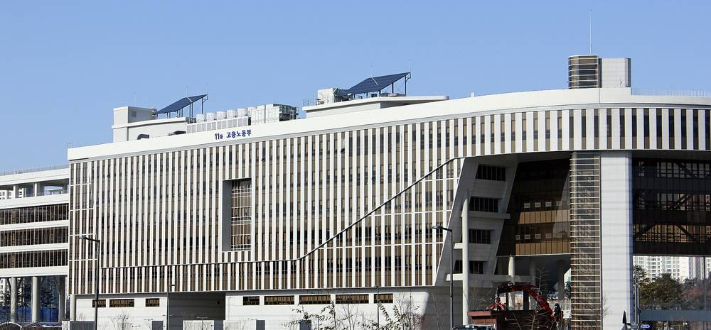
국회 헌법개정자문위 출범…공동위원장에 김형오·정세균 전 국회의장, "현직 대통령 연임은 논의 대상 아냐"
조정식 의장 '국회 주도·연임 논의 배제·여야 합의와 국민 동의' 3대 원칙…전문인력 40명 지원, 국민의힘은 개헌 논의 반대 입장

정부 '베란다형 태양광 10만 가구' 내걸었지만 수요는 목표의 13.6%…LH "참여 계획 없다", 아파트 현장은 설치·관리 부담 호소
올해 추경 국비 375억 원, 내년 750억 원·20만 가구로 확대 편성…하자보증 3~5년 지나면 수리비는 입주민 몫, 이사 때 철거·재설치도 숙제

산단 입주기업, 공장 다 짓기 전에도 지붕·유휴부지 태양광 임대 가능하게…이언주 의원 산업집적법 개정안 발의
산단 태양광 약 2.1GW로 2030년 목표 6GW의 35% 수준…설계 단계부터 태양광 반영해 민간 투자 끌어낸다는 취지, 계통 접속·계약 책임은 과제

경기도, 농식품부 '농지 특별조치법안' 설명회서 "영농 목적 취득과 투기 가를 기준 만들라" 건의
17일 경기남부·19일 경기북부 수도권 설명회에 약 400명…토지거래허가구역 농지 처분명령 대상 조정·기존 농업인 경과조치 요청

국회 기후노동위, '지역고용활성화법' 공청회 연다…여야 4개 법안 발의, 정기국회 처리 가능성
16일 기후부·기상청, 17일 노동부 예산 심사…시·도와 시·군·구에 지역고용노동심의회 두는 게 뼈대, 기존 노사민정협의회 위상 축소 우려도
병원 '실손보험 된다' 허위·과장 광고 금지 추진…환자 알선 의료인 자격정지 2개월→6개월
의료법 시행령·시행규칙 개정안 규제합리화위원회 본심사 앞둬…보험업계 "과잉진료 줄 것" 기대, 병원협회 "기준 불명확, 과도한 규제" 반발
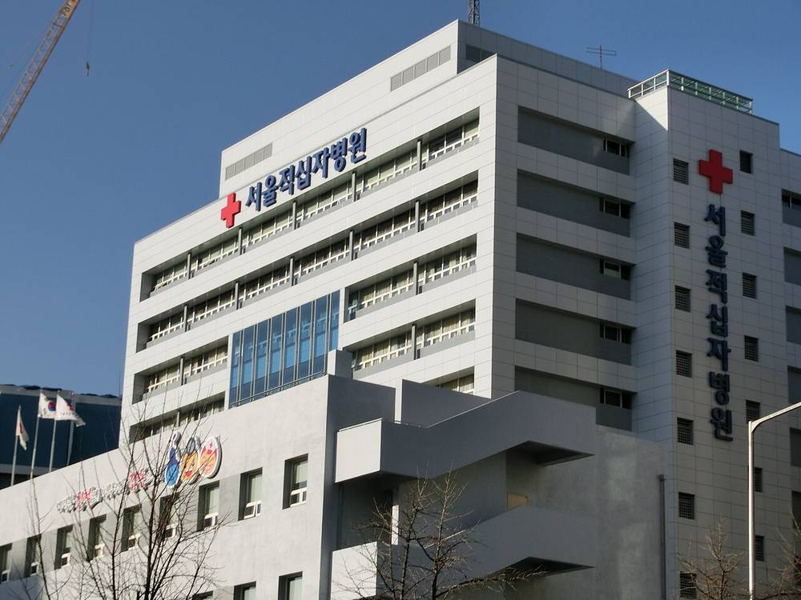
'강원과학기술원법안' 발의 36일 만에 국회 과방위 상정…여야 원주 의원 공동 발의로 심사 속도
강원특별법 4차 개정안은 상정까지 4개월 걸려…과기원 설립만 떼어 단독 법률로 내자 한 달여 만에 법안소위 회부

국방부 첫 '국방 에너지 전환 계획'…4개 분야 12개 과제 내놨지만 재원·일정은 빠져
레이저 무기 전력 수요 대비 마이크로그리드·임무필수부하 도입…장성 상무대 태양광 3,015kW·ESS 9.76MWh 실증, 에너지 자립률은 16.1%

남호주 아파트 주민도 '공동 태양광·배터리'…연방·주정부 1,780만 호주달러 지원, 설치비 절반 보조에 나머지 무이자 융자
'StrataCharge' 사업, 공동주택 한 곳당 보조금·융자 각 최대 4만7,500호주달러…집주인·세입자 모두 전기요금 절감, 남호주 12명 중 1명이 공동주택 거주

종부세·양도세 개편안 19일부터 국회 조세소위 심사…비거주 1주택 공제·공정시장가액비율·장특공제 상한 쟁점
비거주 기본공제 12억 원 vs 14억 원, 공정시장가액비율 70% 인상 vs 60% 유지…"고가주택에 혜택 몰린다" 지적과 "임대료 전가" 우려 맞서

'사립대 반값 등록금' 2조7,337억 원 증액안, 국회 교육위 예결소위 통과…정부 동의·재원이 관건
사립대 등록금을 국공립대 평균 400만 원대로…정부는 지방국립대 신입생 전액 지원 추진, 지원 형평성 쟁점으로

통신 '최적요금제 안내' 법 시행 한 달 넘도록 공회전…고지 주기 놓고 정부·통신 3사 이견
과기정통부 6개월마다 안 vs 통신사 주기 연장 요구…"늦어도 올해 안 첫 고지"

산업안전 위반 신고하면 최대 500만 원…노동부, 내년 1월 28일 신고 포상금 시행
작업중지 명령 위반 500만 원·6대 고위험 위반 50만 원·보호구 미착용 5만 원 검토…현장선 "처리 인력·불이익 방지 먼저"
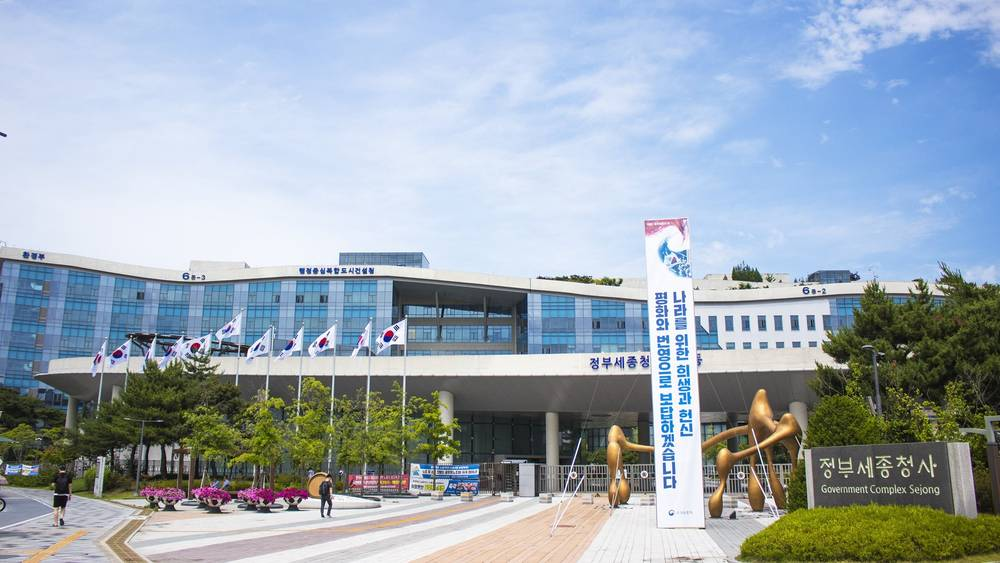

여당 의원도 차별금지법 발의…22대 국회 세 법안, 20년 미룬 입법 논의 다시 불붙나
박주민 의원 평등법 11일 발의, 진보당·조국혁신당 안과 제재 수위 달라…종교계 반대·여당 내 지지 약한 점은 걸림돌
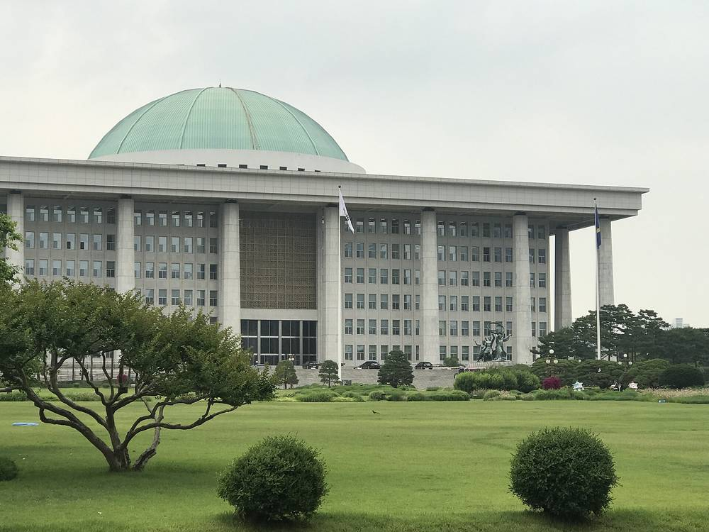
법제연구원 "1,000조 원 K-GX, 기업 탈탄소 뒷받침할 법이 없다"…탄소중립산업법 제정 제언
현행 탄소중립기본법엔 재정·세제·금융 지원 근거 부족…EU 2024년 NZIA, 일본 2023년 GX추진법과 비교

오피스텔·상가 분양계약 '경미한 위반 해지' 막는 건분법 시행령, 연내 시행 어려워
6월 입법예고 뒤 국무조정실 규제 심의 지연…국토부 "내년 중 가능", 업계는 기획소송 늘어 혼란 호소

해수부, 항만공사 4곳 통합 방안 용역 발주…정일영 의원 "필요성 검증 없이 추진, 중단해야"
9월 통합 방침 발표 두 달 만에 4억 원 용역…인천항 정부 재정투자 4년 새 65% 줄고 부산항은 83.6% 늘어
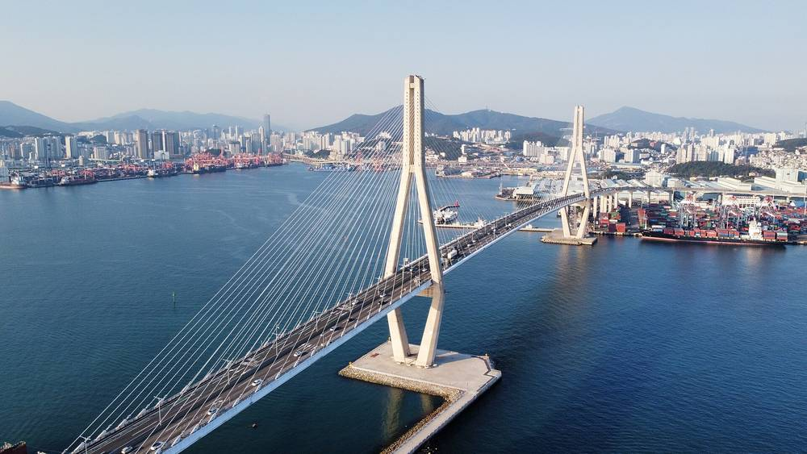
공공기관 냉방 26℃·난방 20℃로 기준 2℃씩 완화 추진…기후부, 23일까지 의견 받아
'공공기관 에너지이용 합리화 규정' 개정안 행정예고…비전기식 냉난방설비 온도 완화 특례는 없애

발전 5사 합친 '한국발전' 본점 울산에…김태선·김기현 의원 등 통합 특별법안 발의
한전 100% 자회사로 설립·합병 절차 간소화…같은 날 부산 본점안·한전 지주회사 전환안도 나와

정부, 국회와 전기차 국내생산세액공제 논의 본격화…중국산 점유율 43.5%로 급등
올해 1~9월 중국산 승용 전기차 11만2,417대로 2.2배…산업부는 '시급', 세정 당국은 '신중'

잇단 개인정보 유출에 여야 공방…민주 "정보보호 예산 44% 늘렸다" vs 국힘 "정부 대응 실효성 의문"
내년 민간 정보보호 예산 5,231억 원…국힘, 10월 25곳 534만 건·대통령 경호 인력 168명 정보 노출 거론

인천 기후단체 "초광역특구법은 기업에 재생에너지 몰아주기"…온실가스 감축 책임·주민 결정권 빠졌다며 철회 요구
집적화지구 전기를 특구기업에 우선 공급·신규 발전사업자 진입 제한 지적…"주민은 공청회 의견 청취뿐"

읍·면·동장 뽑을 때 주민심사단 평가 반영…행안부 '주민선택 임용제' 내년 시범, 2027년 7월 첫 임용
주민자치회가 신청하면 공모형·개방형 중 선택…임기 2년, 한 차례 연임 가능

세무사 시험 수석 'AI 부정행위' 자수에 여야 "진상 규명·감독 체계 손봐야"…19일 수능 대책도 촉구
민주당 "경찰 철저 수사·책임 물어야", 국민의힘 "국가 자격시험 신뢰 흔들려…전파탐지 등 서둘러야"

수도권 데이터센터, 전력계통영향평가 통과 기준 70→75점…16일부터 고시 시행
기후부 '전력이용밀도' 항목 새로 넣고 전기 풍부한 지역은 가점…시범운영 신청 비수도권 7GW·수도권 1.9GW

가상자산 매매·중개업도 기업부설연구소 인정 추진…과기정통부, 시행령 개정안 입법예고
2020년부터 유흥·사행성 업종과 함께 제외…인정되면 세액공제·국가R&D 가점 받을 수 있어

국회 정무위, 17일 금융법안 심사 재개…해킹 과징금·워크아웃법 연장 연내 처리 주목
여야, 소위 안건 협의 중…예금자보호법 특별계정 1년 연장·청년 보금자리론 위한 주금공법도 대기

배달앱 수수료 '할인 전 금액' 기준 바뀌나…배민 배달팁 할인도 제외, 쿠팡이츠는 공정위 시정명령 이행 남아
배민 "점주 수수료 절감 연 1,100억 원"…공정위, 쿠팡이츠에 60일 안 약관 시정 명령

송언석 의원, 제주 무비자 입국 특례 폐지 법안 발의…법무부는 "유지하며 관리 강화"
제주 무사증 입국 뒤 불법체류 1만1,945명 근거 제시…정부는 입국 심사·출도 사전확인 강화 추진
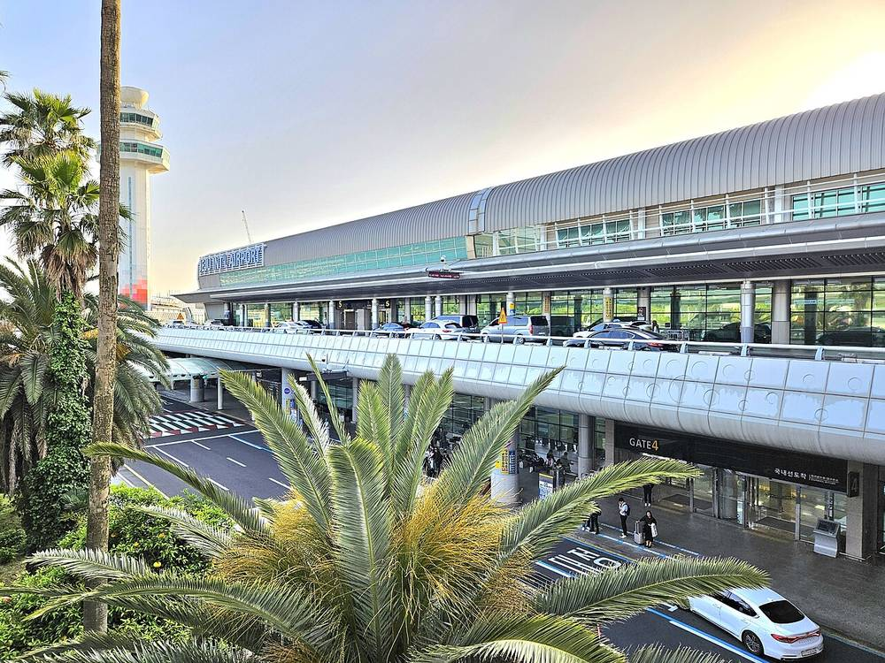
경기도 공공 'RE101' 달성 발표, 실제 재생에너지 발전량은 전력사용량의 14% 수준
안계명 경기도의원 행정사무감사 지적…"설비용량 기준 달성률과 실제 발전량 따로 공개해야"

수능 나흘 앞 'AI 스마트안경' 부정행위 우려…수능장엔 전문 탐지장비 없어
국가자격시험은 감독 장비·인력 예산 65억7,300만 원 증액 추진…국회 국민동의청원도 공개 요건 넘겨


제주 이창흠 초대 기후경제부지사 "풍력·햇빛 이익을 도민 소득으로"…주민참여형 사업을 도민펀드로 넓힌다
2035년 탄소중립 목표, 약 2GW 추자해상풍력 최우선…신규 발전사업 주민 채권·펀드 투자, 공유화기금은 취약계층·공동체 재원
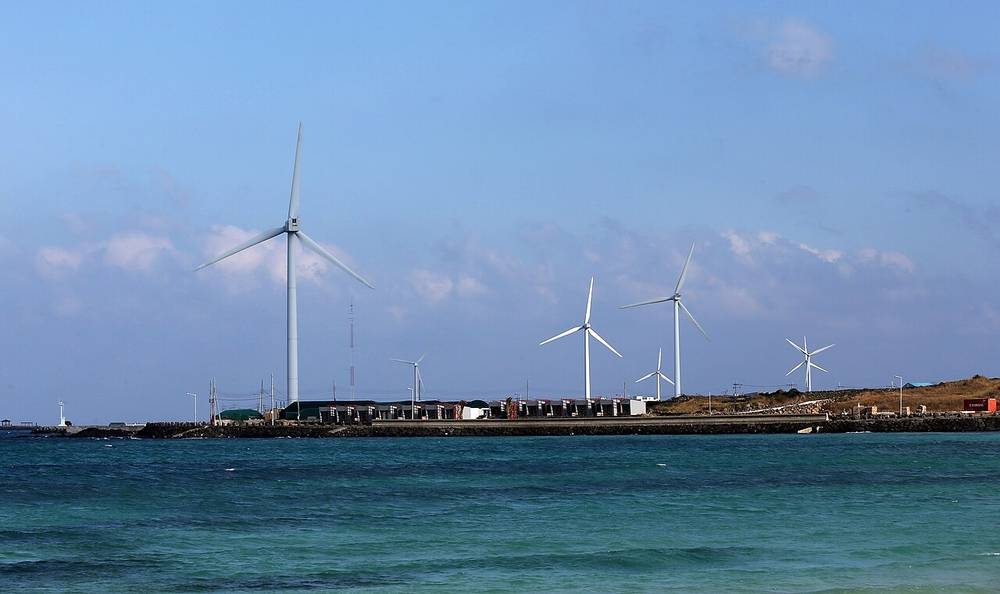
국민의힘 원내지도부 '행정수도특별법 협력' 밝혀…국토위 소위 12월 1일 재논의
세종 지역 당 인사들 요청에 정점식 원내대표 '당의 약속' 확인…범국민대책위 '정기국회 내 제정' 촉구

대통령 "적대적 M&A 걸림돌 전수조사"…대주주 지분 과다 상장사 퇴출 기준 검토 주문
한국거래소 정책간담회, 의무공개매수 '50%+1주냐 100%냐' 맞서…금융위 "상장 분산 요건 검토"
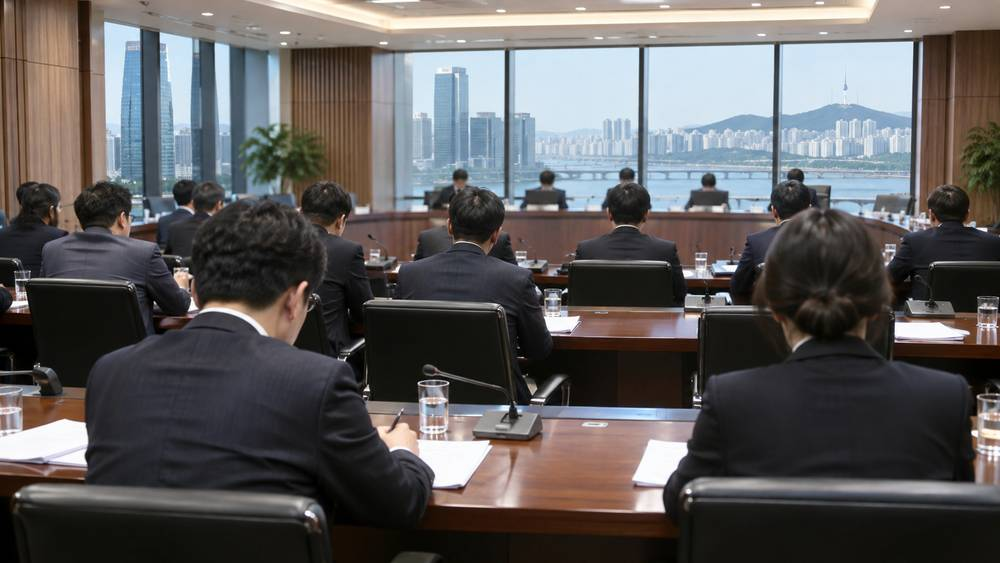
예산소위 앞두고 여야 '미래대응기금' 공방…국힘 "정부 쌈짓돈, 전면 백지화" 민주 "삭감 외치며 지역구 사업은 증액 요구"
초과세수를 별도 기금으로 운용하는 정부안 놓고 국회 예산통제 권한 논쟁
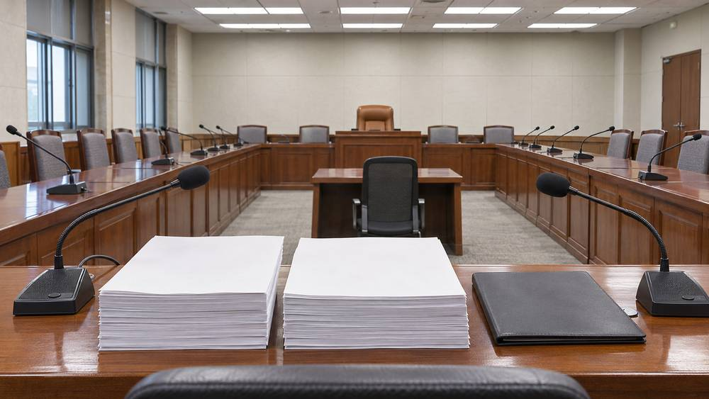
기후시민회의, 7개월 토의 끝에 정부 정책 권고안 70건 확정…자원순환 28건·교육·참여 23건·기업 감축 19건
국가기후위기대응위원회, 광주과학기술원서 9차 회의…12월 전체회의 상정 뒤 5대 원칙 검토 거쳐 정책 반영

'조작기소 특검법' 국무회의 상정 앞두고 여야 장외 공방…국민의힘 부산 집회, 민주당 "민생 외면한 정치 공세"
21일 처리 시한에 17일 또는 20일 국무회의 상정 거론…국민의힘은 거부권 행사 촉구하며 대구·대전 집회 예고
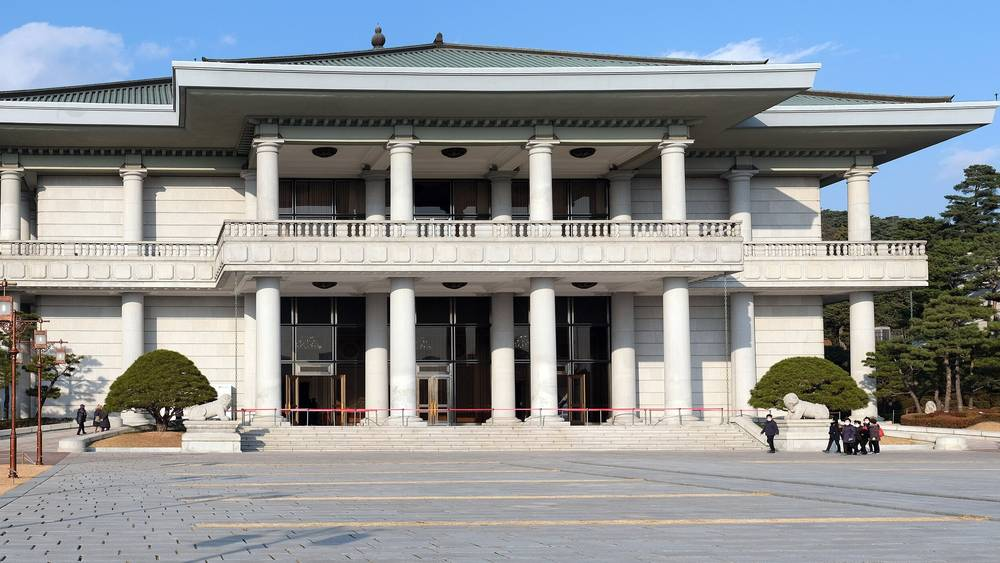
영국 코번트리시, 에온과 그린벨트에 25MW 태양광 추진…시의원들 "에온이 얼마 버는지 공개하라"
7,000가구분 전기·사업비는 에온 부담, 시는 소유 땅 임대료와 전력 구매 검토…두 번째 단지 부지도 물색

공공분양 10곳 중 6곳 주변 시세보다 비싸…'무주택자 구매 부담능력' 분양가에 반영하는 법안 발의
황운하 의원, 공공주택 특별법 개정안…주변 매매가·소득 대비 주택가격 비율·공급원가 함께 검토하고 결정 근거 공개
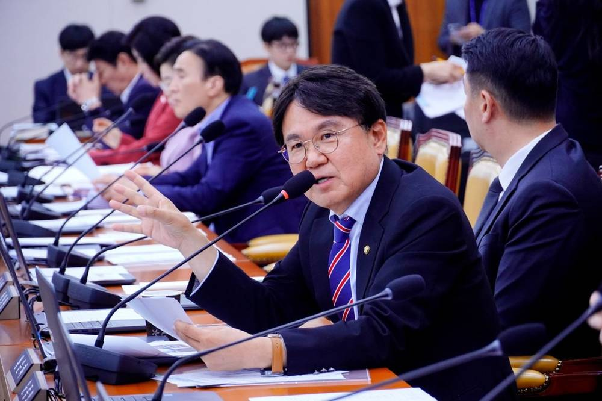
국군사관학교 통합안 4개월 만에 수정…해사·공사 남기고 '1+2+1' 순환 교육으로
국방부 "각 군 의견 패싱 아니다"…생도 2,350명 설문 17일까지, 11월 중 당정 협의로 최종안
농어촌 기본소득 공모 추천 못 받은 거창·하동, 자체 재원으로 기본소득 추진
경남도, 9개 군 중 산청만 추천…거창은 조례 가결, 하동은 월 5만 원 선불카드 조례 개정 입법예고

등기부 열람 700원→1,100원…법원행정처, 25년 만에 등기 수수료 400원씩 인상 추진
방문 발급 1,200원→1,600원·인터넷 발급 1,000원→1,400원…공인중개사 500명 국회 앞 반대 집회, 청원 5만 명 넘어
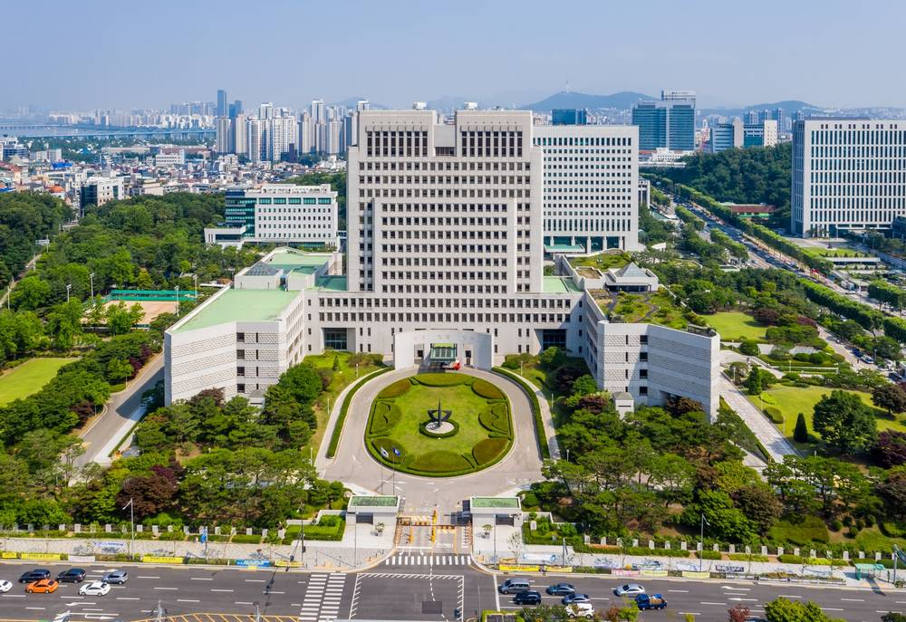
162조 미래대응기금 8개 사업 4조3,472억 원, 정부는 '신규'·국회 보고서는 '계속'…예산 심사 쟁점으로
청년일자리도약장려금 9,012억 원 중 70.1%는 옛 채용자 잔여분…기획예산처 "확대 개편으로 기금 차원 신규"

쓰지 않은 카드포인트 2조1,000억 원, 2027년 5월부터 지역화폐로 바꿔 쓴다
어카운트인포·지역화폐 앱에서 신청하면 다음 날 사용…KTX 마일리지·탄소중립포인트도 전환 검토

한중 외교장관 베이징서 3시간 회담·만찬…북한 대화 복귀·서해 문제 논의
다음 주 선전 APEC 계기 정상회담 앞둬…中 "올해 교역 다시 최고치, 인적 교류 1,000만 명 예상"
한파 취약사업장 3만여 곳 집중 관리…새벽 옥외작업 시간 조정 지도, 집중점검 600곳으로 3배
고용노동부, 15일부터 내년 3월 15일까지 한파 안전 대책기간…환경미화 노동자에 방한용품 1만4,300세트, 이주노동자에 외국어 안내서
2027년 농어촌 기본소득 시범사업 신규 공모에 34개 군 신청…경쟁률 1.9대 1
국비 비율 50%로 10%p 올려 공모…11월 19일께 18개 군 안팎 잠정 발표, 최종 선정은 국회 예산 확정 뒤

진보당 "'태양광 올림픽' 여는 나라가 기후대응 61위"…대전 세계태양광총회 앞두고 원전 재가동 중단 요구
15일부터 4년마다 열리는 세계태양광총회 대전 개최…CCPI 2027서 한국 31.07점으로 65곳 중 61위

석유 최고가격 5회 연속 동결…휘발유 1,784원·경유 1,773원 12월 11일까지
정부 "물가 안정 효과 확인"…정유사 손실 보전에 예비비 4조2,000억 원, 종료 시점은 미정

체코 원전 시공사 교체, 국회로…여야 산자위원 "청문회 열어야", 개최 여부는 미정
한수원 "15개월 협상에도 비용 차 1조 원 넘어"…내년 7월까지 새 시공사 뽑고 2027년 4월 건설허가 신청

공공건축물 그린리모델링 의무화 앞두고 제외 대상 정한다…국방·문화유산·안전등급 D 이하 등
국토부, 녹색건축물법 시행령 개정안 12월 22일까지 입법예고…2027년 3월 9일 의무화와 함께 시행
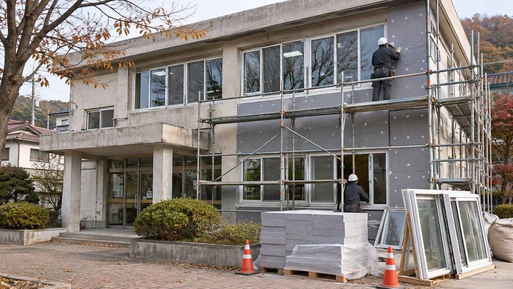
국회 과방위, 내년 과기정통부 예산 1조3,000억여 원 증액 의결…출연연 인건비·AI 사업 늘려
방미통위·우주항공청·원안위 예산도 순증, 예결위 심사 거쳐 확정…법정 처리시한 12월 2일
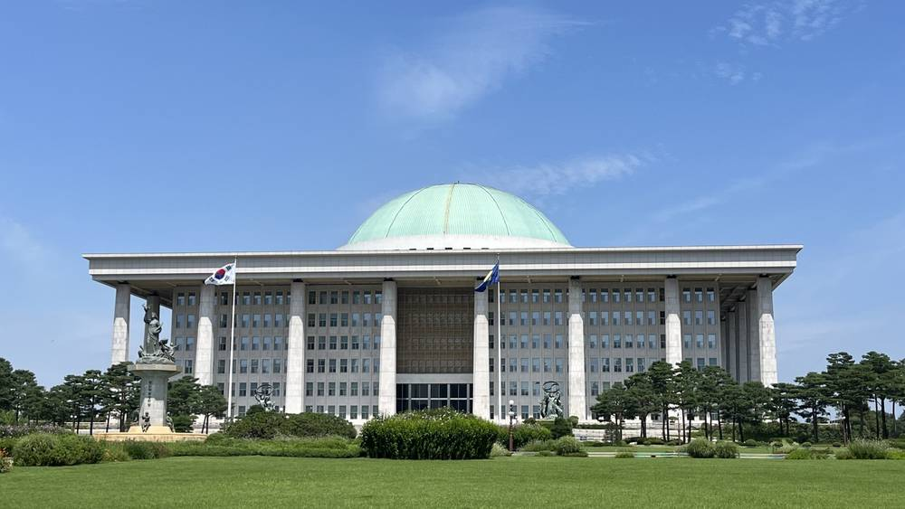
한성숙 총리 "좋은 지방정부 정책 전국으로"…신안 이익공유제·영광 햇빛·바람 기본소득 대표 사례로 꼽아
국회 '참좋은 지방자치 정책대회' 축사서 "햇빛소득마을과 함께 확대"…19개 지방정부 성과 발표

산불·산사태 우려 땐 시·군·구가 주민대피계획 의무 수립…산불 과태료 상한 300만 원으로
산림청, 산림재난방지법 시행령 개정 시행…국가중요시설·문화유산 주변 위험 나무 제거 근거도

건보공단 특사경 법안, 법사위 전체회의 16일로 연기…의료계 "철회" vs 공단 "재정 누수 막아야"
사무장병원·면허대여약국 수사권 부여 개정안, 11일 소위 의결 뒤 심사 미뤄져
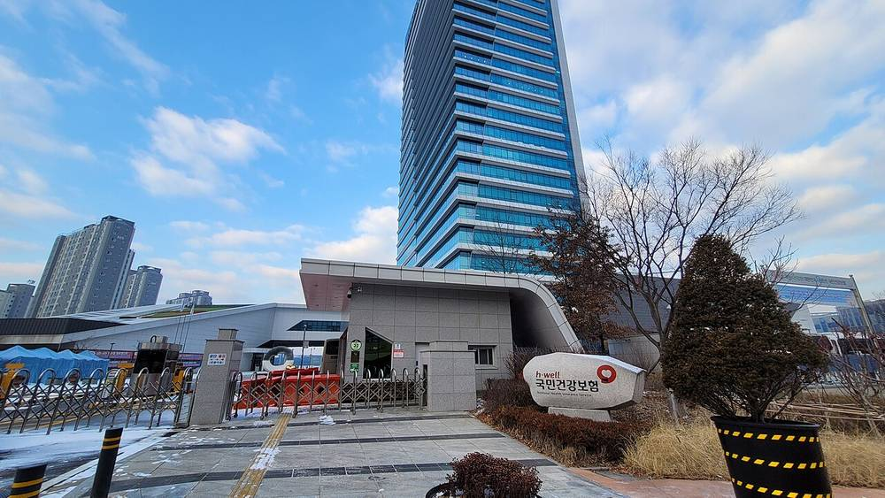


산자위, 반도체·미래대응기금 이견에 내년 예산안 의결 못 하고 정회
국민의힘 "서남권 반도체 1조5,000억 원 전액 삭감" vs 민주당 "4조5,000억 원 늘려 6조 원"

제주도의회 "해상풍력 10GW·연 1조 원 에너지 기본소득 약속 어디 갔나"…도민 전체 이익환원 로드맵 요구
김기환 미래경제산업위원장 도정질문…공약실천계획에선 5GW로 줄고 기본소득 빠져

제주도, COP31서 '2035 탄소중립' 제시…"재생에너지 수익을 주민소득·지역복지로"
튀르키예 안탈리아서 4년 연속 제주세션…기후시민회의·V2G·ESS로 시민 에너지시장 참여 넓힌다

대만 재생에너지연맹, 지방선거 후보 에너지 회복력 공약 별점 평가…45명 중 18명만 답해
주민 재생에너지 지원·2035년 로드맵 내놓은 신주시 후보 "특히 돋보여"
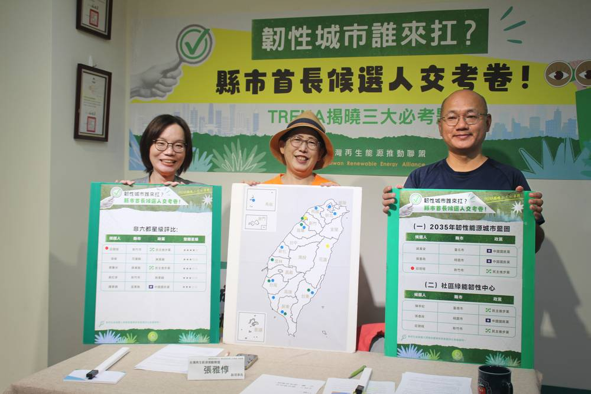
영농형 태양광법 12월 17일 시행 앞두고…농식품부 "외지인 '알박기' 막게 한 사람 몫에 상한"
임차농은 사업 기간 계약 자동 갱신·임차료 인상 5% 제한, 표준 임대차계약서 내년 보급
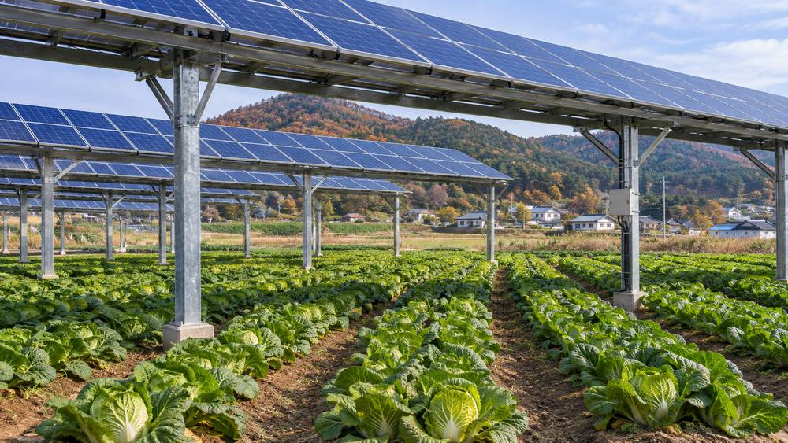
'농지 특별조치법' 국회 공청회…"현장 혼란 수습 필요" 공감 속 "농지법 원칙 흔든다" 우려
농해수위 소위, 24일부터 법안 심사…임대차 최장 20년 허용·위반 처분 면제 범위 놓고 논쟁

영국 정부 지원 '넷제로 허브' "지역에너지, 주민이 에너지의 주인이 되는 일"
잉글랜드 5개 허브 중 북동부·요크셔 허브 책임자 "수익은 지역에 남고 주민이 한데 모인다"

네덜란드 하원 "내년 봄까지 발코니 태양광 연결 기준 만들라"…17개 교섭단체 중 12곳 찬성
가구 35%가 이미 태양광…지붕 없는 집도 전기요금 줄이게, 독일은 지난해 플러그인 설비로 500MW 늘어
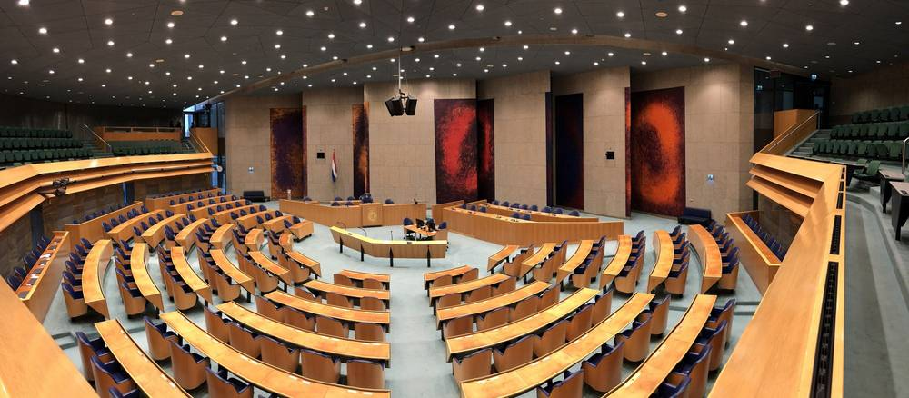
송전망 보상 늘렸지만 "한전 주도 입지선정부터 바꿔야"…주민들 "변전소·선로 윤곽 잡는 첫 단계부터 참여"
정부, 지원금 최대 3분의 2 마을 배분·'계통햇빛소득마을' 선도사업 추진…전문가 "에너지계획·국토계획 함께 세워야"

영농형 태양광, 어떤 작물 위에 농가당 얼마까지?…농식품부 고시 11월 말 행정예고
12월 17일 법 시행 앞두고 재배작물·발전용량 상한 조율 중…업계 "200kW 돌려도 농업소득 평균 수준"

햇빛소득마을 태양광 부지, 재산세 분리과세 대상에 넣는다…행안부 지방세법 시행령 개정안, 2027년 1월 시행
주민 협동조합·사회적협동조합이 행안부 선정 태양광 사업에 쓰는 토지 대상…2030년까지 적용

정부 "조건부 선정 햇빛소득마을도 사업화 지원"…ESS 구축 사업 11월 공고, 1MW 이하 주민참여 태양광 계통 우선접속 12월 말 시행
행안부·기후부·농식품부 설명자료…"523곳 중 즉시 착수 36곳" 지적에 저수지·비축농지·도로 사면 등 유휴 국공유지 제공 계속
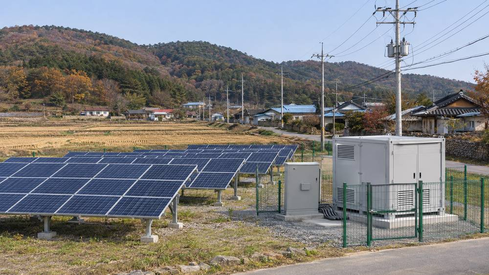
남원시의회 노현이 의원, 공영주차장 태양광 수익 시민에게 돌리는 조례 발의 추진…토론회서 협동조합 모델 논의
10일 '공영주차장 햇빛에너지 주민소득화 방안 토론회'에 시민·전문가 30여 명…전주시 에너지센터·환경운동연합·공동체지원센터 발표

서울에너지공사 지난해 태양광 사업 집행률 77%…최두호 시의원 "노후 설비 교체·도심 태양광 확대 연차별 실행계획 내라"
공사 "운영 끝난 발전 부지 넘겨받아 고효율로 바꾸고 공영주차장 태양광 단계적 확대"…전기차 충전기 위탁업체 임금 체불로 관리 하루 멈춘 일도 질타

SH 임대단지 지붕 태양광, 낮에 남는 전기는 관리비로 돌아오나…오중석 서울시의원 "요금상계 현황 공개하고 12월 말까지 전환 계획 내라"
LH가 세종 행복주택 238가구에서 공동주택 첫 요금상계 시작하자 같은 ZEB 3등급 고덕 온빛채 697가구 사례 따져…상계 안 되는 단지는 이유 목록부터

전남광주 햇빛소득마을 126곳 ESS 조건에 주민 초기 부담 커…이재창 시의원 "폐도·제방·철도 주변까지 부지 넓히고 주민 부담 낮춰야"
통합특별시의회 행정사무감사서 도로변 태양광 등 새 부지 발굴 주문…에너지산업본부 "가상발전소 사업자 지정해 마을과 협의"

다음 달 17일 시행 영농형 태양광법, 한 사람 발전 용량에 상한…임차농엔 계약 자동 갱신·임차료 인상 5% 제한
농식품부, 외지인 계통 '알박기' 막으려 상한 두고 시행령·고시 마련 중…표준 임대차계약서 내년 보급, 금융·전력 단가 지원은 협의 과제로 남아
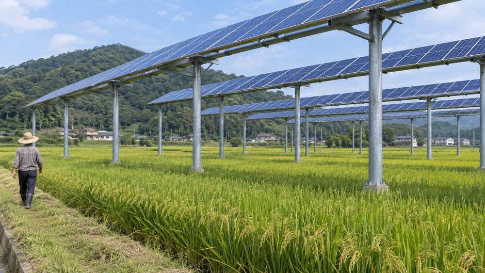
재생에너지 100GW 목표 5대 과제 중 '초록불' 하나도 없어…기후솔루션 "화석연료 특권·망 중립성은 빨간불"
12일 '100GW 신호등' 공개, 보급은 47.2GW로 절반 못 미쳐…허가 해상풍력 36GW 중 지어진 건 1%, 영농형 태양광 지구 지정도 아직 없어

햇빛소득마을 523곳 뽑았지만 바로 시작할 수 있는 곳은 36곳…예정처 "새 마을 늘리기보다 선정 마을 사업화부터"
1차 선정 87곳 중 즉시 추진 13곳, 6개월 보완 조건 채운 곳은 4곳뿐…행안부 "계통만 풀리면 130~140곳 바로 착수"

"2030년까지 지붕 태양광 3억 가구"…방글라데시·케냐·나이지리아 등 '세계 지붕 태양광 선언' 동참
호주가 먼저 지지한 선언에 인니 국영전력 PLN·21개국 의원 34명도…인허가 간소화·가계 금융 등 촉구

반도체 용수 위해 동복댐 키우면 280가구 수몰…기후부 장관 "직접 연금은 어렵다, 주민 태양광 협동조합 '햇빛연금'은 설계 가능"
이주 예정 주민 대책위, 월 150만~200만 원 상생연금 등 6가지 요구…용수 단가 인상엔 "전국 물값 오른다"며 선 그어

18억 원 들인 영광 월평마을 태양광 1MW, 1년 넘게 전력망 못 붙어 수익 0원…통합특별시의회 행감서 질타
햇빛소득마을 126곳 선정됐지만 바로 접속 가능한 곳 5곳뿐…'자부담 15%에 배당 쏠림 우려, 소규모 실경작 농가 우선해야'
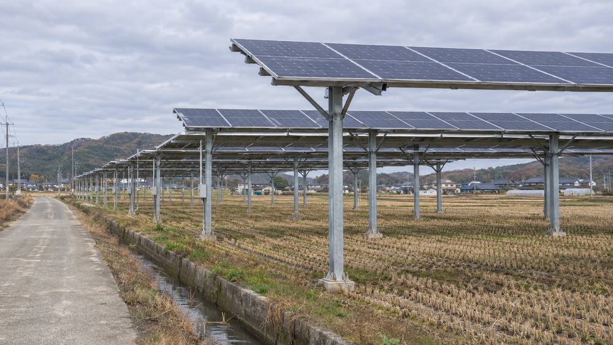
일본 규슈, 영농형 태양광 5년 새 4.4배…전국 설치 농지 24%는 수확 2할 넘게 줄어 정부가 허가 조건 강화
후쿠오카 야메 차밭은 차광 시설에 패널 얹어 월 7만~8만 엔…농수산성 '차광률 30% 미만·연 판매 50만 엔 이상' 새 조건에 업계 "일률 규제 지나쳐"

햇빛소득마을 522곳 중 490곳 '조건부'…국회 예결위서 "착공한 곳 거의 없고 브로커가 주민 밀어낼 수 있다"
2027년 예산안 심사 전체회의, 내년 2,200곳 확대 계획에 예산은 이차보전 285억 원 중심…영농형 태양광 150억 원도 연구·제도 기반에 쏠렸다는 지적

전력망 사업 104건 중 기한 내 준공 19건뿐…국회 토론회 "초기 주민 참여·공정한 이익공유 제도화해야"
이철규 의원 "국가 편익이 특정 지역 일방 부담 돼선 안 돼"…은재호 교수 '적시성·절차적 정당성·공간적 정의' 함께 봐야, 한전은 독일 주민참여 제도와 비교

영농형 태양광법 시행 한 달 앞인데…영양변전소 준공 2년 6개월 늦어져 농민들 "전기 보낼 길 없다"
154kV 영양변전소 2027년 6월에서 2029년 12월 말(전기 공급 기준)로 미뤄져…약 29㎞ 송전선로·송전탑 약 76기는 아직 착공 못 해

문금주 의원, 농협 사업에 영농형 태양광 등 재생에너지 넣는 농협법 개정안 발의…12월 영농형태양광법 시행 앞둬
임업직불금 요건 완화, 영농조합법인 준조합원 배당 분리과세 2031년까지 연장 등 3개 법안 함께 내

대전시, 17일 재생에너지 정책 포럼…'태양광 가치를 지역과 나누는' 시민 참여형 모델 찾는다
세계태양광총회 특별세션으로 에너지자립마을·산단 지붕 태양광 사례 발표…에너지연·한전KDN과 분산에너지 협약, 특화지역 지정 기반으로

의성군, 재생에너지 개발이익 군민 공유 조례 제정…최유철 군수 "바람과 햇빛은 주인이 없다"
협동조합·펀드·채권으로 발전사업에 참여해 배당받고 배당금 일부는 의성사랑상품권으로…군수 "이익은 외부로 빠지고 지역엔 소음·경관 훼손만 남았다"
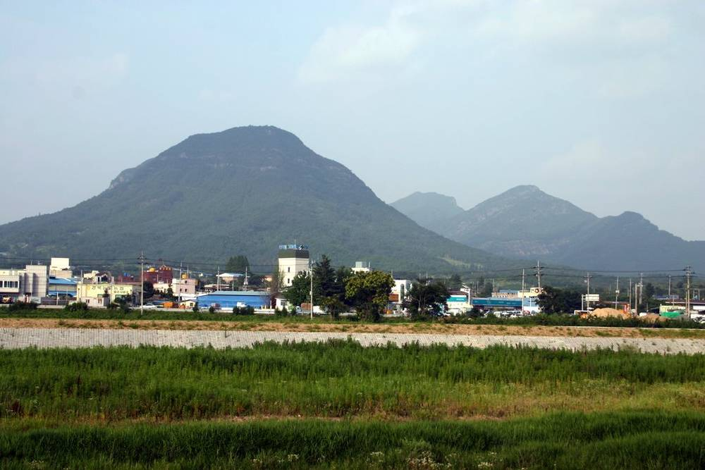
미국 볼티모어 시민단체, 민영 BGE 대신 시영 전력 운동…시의원 15명 중 4명·새 당선자 3명 'BGE 후원금 거부' 서약
데이터센터 반발·요금 상승 속 2025년 출범한 '볼티모어 공영전력'…BGE는 4년간 77억 달러 투자·연 1억5,610만 달러 요금 인상 요청, 지난 25년 공영화 시도 64건 중 7건만 성공

루마니아 공동주택 태양광 법안 3건 의회 절차에…시민단체 안, 아파트 공용 지붕 전기 판매 수익 최대 85% 관리비서 덜어 줘
프로슈머·에너지공동체 협회(APCE)가 2건 발의…발코니 태양광은 패널 4장·800VA 이하로 신고만, 공용 지붕은 소유자 3분의 2 동의, 별도 법안은 비참여 세대 부담 금지·배당 금지

국회서 에너지 기본권 토론회…요금 지원 넘어 최소 보장기준·참여권·편익공유권 법제화 제안
서왕진 의원 주최, 고재경 환경정의 공동대표는 에너지전환 참여권·정보권·편익공유권, 김재경 에너지경제연구원 선임연구위원은 기본에너지·공급중단 방지의 에너지법 명시 제안

전남광주시, 공공이 입지 고르는 영농형 태양광 계획입지 추진…연내 시군과 재생에너지 예비지구 협약
12월 17일 영농형태양광사업법 시행 앞두고 관계기관 업무공유회…지역 전력을 지역기업 RE100에 쓰는 전력거래 방안도 논의, 대상지·용량·이익 공유 방식은 미정
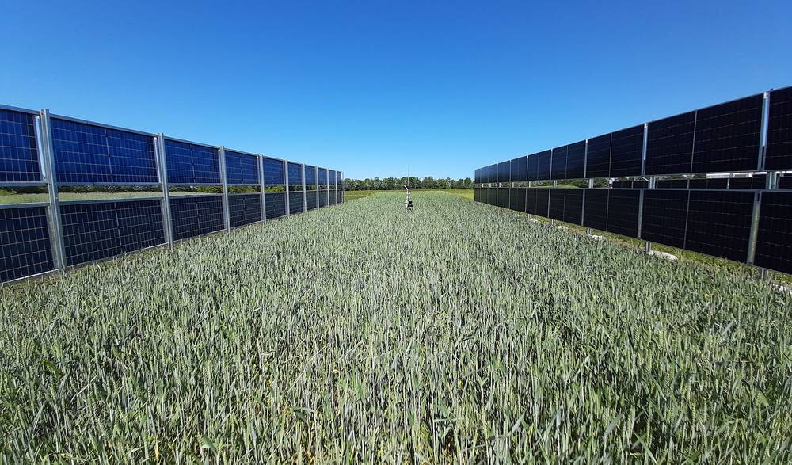
"석탄은 공공, 재생에너지는 민간 독식은 또 다른 불평등"…국회서 발전공기업 통합 토론회
신정훈·최기상·안호영·정혜경 의원과 공공재생에너지연대 공동 주최…통합 공기업이 전환 주체 되도록 경영평가 손질·민자 가스발전 제한 요구
호주 캔버라 최대 배터리 250MW 상업 운전…개발사, 15년간 수익 50%를 준주 정부와 나누고 지역 단체 9곳에 50만 호주달러
준주 정부가 건설을 받쳐 주고 운영 수익 절반을 돌려받아 탈탄소 재원으로…최대 수요 때 캔버라 3분의 1에 2시간 전기, 2045년 탄소중립 겨냥

아일랜드 오펄리주 파이브앨리 에너지공동체, 정부 에너지상 수상…두 단계에 걸쳐 128가구가 태양광 패널 1,650장 공동 설치
'솔라 미할' 사업으로 가구마다 재생에너지 전기 생산·에너지 비용 절감…국영 보르드나모나의 데린러프 풍력단지 지역이익기금이 SEAI·주민과 함께 지원, 기후·에너지·환경부 장관이 시상

영국 정부, '에너지 독립 법안' 하원 제출…새 재생에너지 사업에 지역 지분 최대 20% 제안 의무화할 길 열어
5MW 넘는 새 육상풍력·지상 태양광은 지역사회 이익 협약 맺어야, 정부 잠정안은 풍력 MW당 연 5,000파운드·태양광 700파운드…지분 제안 대상은 1MW 이상으로 낮출 수 있게, 비율·금액은 하위 법령에서 확정

"집이 4채면 보호 못 받나"…농민·주민단체, 재생에너지 이격거리 '5호 미만 제외' 시행령에 헌법소원
강릉·봉화 주민 6명 청구인으로 나서…조례 이격거리 상한(태양광 200m·풍력 1,500m)에 더해 이격거리 안 주택이 5호 미만이면 적용을 빼는 조항 겨냥, "평등권·환경권·건강권 침해" 주장
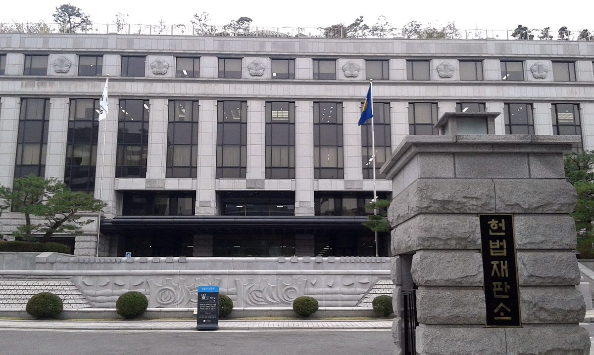
조국혁신당, 초광역특구법안 당론 발의…재생에너지 사업은 총사업비 4% 이상 주민 투자 기회 먼저
주민·노동자 참여 상생협의회, 송·배전 공동접속설비 국가 지원 담고 주 52시간제 예외·지주회사 규제 완화는 빼…규제특례엔 5년 유효기간, 발의 단계

뉴질랜드 애슈버턴 지역의회, 오르는 전기요금에 태양광 검토…연 40만 달러 절감에 500만 달러 넘는 선투자 놓고 의원 이견
연 전기료 약 177만 달러, 다음 주 장기계획 예산 심의서 부서별 태양광 안 검토…"그 돈 도로에 쓰는 게 낫나" 대 "건물 지붕에 조금씩"

국민의힘, 내년 예산 삭감 대상에 '햇빛소득마을 등 재생에너지'·협동조합·사회연대경제 사업 꼽아
예결위원들 "재생에너지 1조8,210억 원은 증액중독, 협동조합 819억 원·사회연대경제 633억 원은 우리끼리 예산" 주장…햇빛소득마을만의 삭감액은 안 밝혀…정부는 같은 날 예산안 제안설명에서 햇빛소득마을 확산 등 재생에너지 보급 예산 두 배 증액을 설명했으나, 지목에 직접 답한 반론은 아직

솔라리그 장관표창에 인제군·고령군·달구벌시민햇빛발전협동조합…민간부문 입상 4곳 모두 발전협동조합
제8회 대한민국 솔라리그 14곳 수상 확정, 5일 정부세종컨벤션센터서 시상…고령군은 햇빛소득마을 수익을 주민복지기금에, 군포시는 주민·시민발전협동조합과 방음터널 태양광 기획
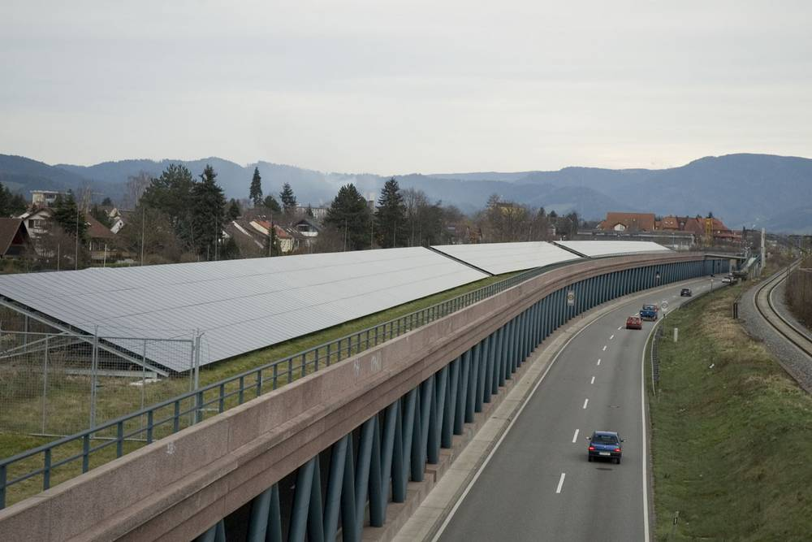
포르투갈 정부, 2027년 '재생에너지 수용 계획' 내놓는다…"설치 때 한 번이 아니라 여러 해 주민에게 이익을"
환경에너지부 장관 "지역 반발은 긴급한 일", 이웃 주민용 에너지공동체를 예로 들어…예산안엔 한 문장뿐 예산·일정 없고, 6월 법령이 정한 90일 기한도 9월 말 넘겨

그리스 코자니 아크리니 주민 에너지공동체, 태양광 35MW분 이익 세금 없이 기부받는 길 열려…정부 법안 조항 의견 수렴
국가경제재정부 법안 26조…재생에너지 관리 회사 기부금에 증여세·소득세 면제, 마을에 부동산 가진 사람은 다른 공동체 조합원이어도 가입, 아직 확정 안 돼

용인시정연구원 "재생에너지 혜택은 시민에게"…시민투자·주민 일자리·공공자산 태양광 담은 '용인형 이익공유 모델' 제안
이슈리포트 'YRI Insight 119호'…반도체 산단 전력설비 약 15GW 전망 속 시민협동조합·펀드 투자, 송전망 영향 주민 우선 출자권 검토, 공영주차장 51곳 중 17곳 태양광 계획 제출

농협에 농지 소유 길 여는 법안 놓고 국회 토론회서 찬반…법안 목적에 공동영농·영농형 태양광·친환경농업
사회적협동조합 등 사회적경제 조직을 '농지보유합리화법인'으로 지정하는 법안도 다뤄…농민단체는 국가 공공매입·임차농 경작권 보장이 먼저
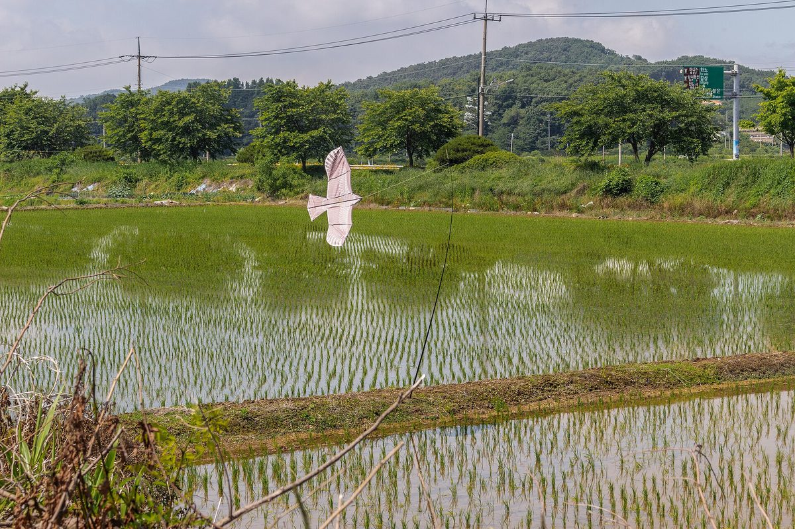
정부 '주민참여 우수사례' 한림해상풍력, 주민 몫 REC 수익에서 주민 회사채 이자 먼저 뗐다…로펌 3곳 "법 위반" 자문 의견
주민법인 3곳이 산 회사채 300억 원의 연 7% 이자를 가중치 0.3 추가 REC 수익에서 충당, 남은 돈만 '이익공유'로 지급…에너지공단 "절차 진행 중", 기후부 "문제 확인되면 개선", 사업자 "주민과 약정, 당국과 협의 중"

그리스, '에너지 공유 권리' 담은 전력시장 법안 의회 제출…다른 건물에서 만든 태양광 전기도 가정·중소기업·지자체가 나눠 쓴다
법안 12조로 전력법에 137Γ조 신설…6MW 이하 설비는 제3자가 운영 대행, 공공 소유 설비는 공유 전기의 평균 10% 이상을 취약가구에 돌리도록 노력해야
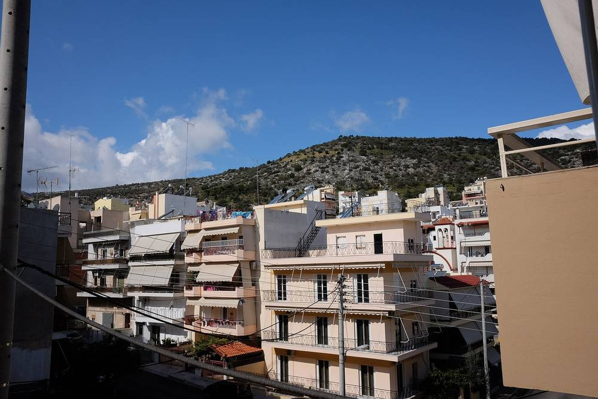
콜롬비아 정부 '에너지공동체' 태양광 사업, 패널 견적가가 시장가보다 높다는 문제 제기…대부분 공정 50% 못 미쳐 연말까지 연장 요청
2025년 말 공기업 3곳과 계약 17건·9,140억 페소, 2만8,544가구에 패널 6만221장…정부·전 차관 "가구당 비용으로 보면 과다 비용 없다"

스페인 에너지공동체 837곳 중 가동 27%…정부, 11월 29일 선거 전 '에너지공동체 왕령' 긴급 처리 추진
조합원 20명 미만이 39.1%로 가장 많고 설치 뒤 자가소비까지 최대 2년 지연…공동 자가소비 거리 5km·자가소비 관리인은 이미 시행, 지원 사무소 1차 74곳·1,840만 유로

이 대통령 "영양 풍력·햇빛 공유수익, 기본소득 재원으로 쓸 수 있을 것"…영양군, 500억 원 들여 풍력 SPC 지분 10% 갖는 '평생연금' 구상 건의
영양군, 신규·재개발 풍력 55기·347MW 사업에 출자해 20년간 1,241억 원 기대…공공재원 200억 원 융자 등 정부에 건의했지만 답변은 아직 없고, 기대 수익은 검증 전 전망치
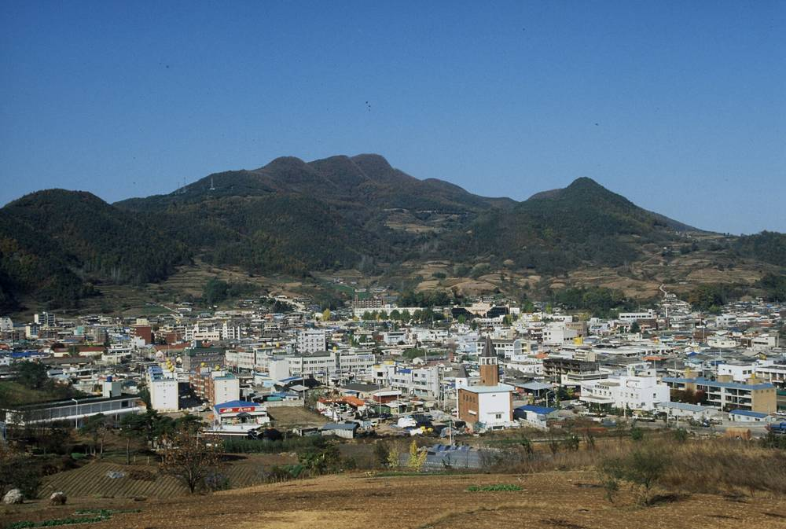
그리스 서마케도니아 도의회, 국영 전력사·아마존 데이터센터와 지역 발전 협약 협상단 꾸리기로…지역구 국회의원은 태양광 500MW 지역 몫 제안
도지사 안 찬성 17표로 통과, 협상 불가 조건부터 정하자는 야당 안은 8표…쿠쿨로풀로스 국회 부의장, 땅·물 내주는 대가로 500MW 짓게 해 도·시가 함께 지역 전력 공급 회사 만들자고 제안, 전기값 MWh당 50~60유로 주장

신한자산운용, 주민수익공유 펀드·에너지 인프라 성장 펀드 합계 약 5,000억 원 결성…주민 펀드 첫 투자처로 대규모 해상풍력 주민참여 사업 확보
발전단지 인근 주민·주민조합에 지분·채권 투자 자금을 대고 발전수익 일부를 배당·이자로 돌려주는 구조…주민 펀드 단독 금액, 첫 투자 사업 이름, 주민 금리·배당 조건은 발표에 없어

서산 관내 발전용량 68만kW 중 주민 수익 마을발전소는 218kW, 0.03%…시의원 "주민참여·개발이익공유 조례안 준비"
김애란 서산시의원, 첫 시정질문서 주민협동조합 설립 컨설팅·이익 배분 기준 마련에 집행부 협조 요청…조례안은 발의 전 단계, 재생에너지 대목 시 답변은 알려지지 않아

미국 앤아버시, 시민단체의 '공공전력' 주민투표안에 투표 8일 앞두고 무효 확인 소송…주 법무장관실은 "헌장 수정으로 볼 수 있다"
시의회 10 대 1 결의 따라 69쪽 소장 내…시는 "헌장 개정 절차 안 밟았다", 시민단체는 "막판 선거 결과 바꾸기" 반발, 판결·심리 일정은 아직 없어

미국 미시간 '커뮤니티 솔라' 법안, 2021년 뒤 6건 나왔지만 모두 표류…하원·상원 4건 위원회에 묶여 청문회 일정도 없어
저소득 가구 몫 40%·요금 최소 10~20% 절감 담은 하원안까지 나왔지만 DTE·Consumers Energy "미가입자에 비용 전가" 반대…앤아버는 시 에너지공사로 가정에 태양광·배터리
국감서 영농형 태양광 시행령 "농업회사법인 참여 지역 과도하게 묶어" 지적
주철현 의원 "국가 간척지 없는 12개 시도는 사업 불가"…송미령 장관 "범위 확대 살펴보고 지방정부와 논의"
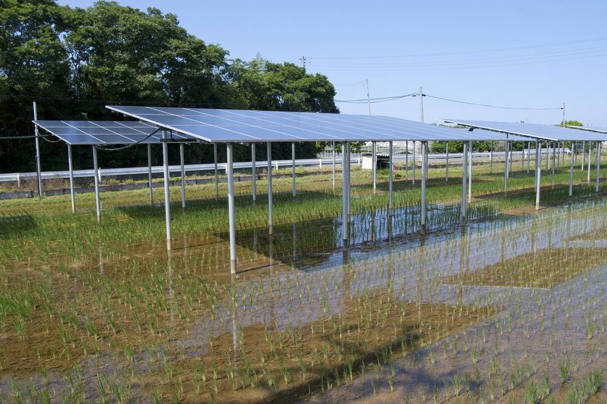
발전 5사 통합 특별법 국회 심사 본격화…한전 자회사냐 정부 직접 출자냐
최기상안은 한전 100% 자회사 한국발전, 다른 의원안은 정부 전액·51% 이상 출자…정부는 2027년 10월 출범 목표

政治
安城市の「公有地活用・住民参加型太陽光」、地方自治政策大会で受賞…体育施設・公営駐車場に市民協同組合の発電所
13日に国会舍廊斎で市長・郡守・区庁長協議会長賞…近隣の村の参加と収益の村の福祉への活用を審査基準に、今後は仮想発電所で域内企業に安い電気を供給する構想
政府「ベランダ型太陽光10万世帯」掲げるも需要は目標の13.6%…LH「参加計画なし」、マンション現場は設置・管理の負担訴え
今年の補正予算で国費375億ウォン、来年は750億ウォン・20万世帯に拡大編成…瑕疵保証3~5年後の修理費は入居者負担、引っ越し時の撤去・再設置も課題
産業団地の入居企業、工場完成前でも屋根・遊休地を太陽光向けに賃貸可能に…李彦周議員が産業集積法改正案を発議
産業団地の太陽光は約2.1GWで2030年目標6GWの35%水準…設計段階から太陽光を反映し民間投資を呼び込む狙い、系統接続・契約責任は課題
国防部初の「国防エネルギー転換計画」…4分野12課題を示すも財源・日程は示さず
レーザー兵器の電力需要に備えマイクログリッド・任務必須負荷を導入…長城・尚武台で太陽光3,015kW・ESS 9.76MWhを実証、エネルギー自立率は16.1%
南オーストラリアの集合住宅住民にも「共同太陽光・蓄電池」…連邦・州政府が1,780万豪ドル支援、設置費の半額補助と残りは無利子融資
「StrataCharge」事業、1物件あたり補助金・融資それぞれ最大4万7,500豪ドル…所有者も賃借人も電気料金を節約、南オーストラリアでは12人に1人が区分所有建物に居住
法制研究院「1,000兆ウォンのK-GX、企業の脱炭素を支える法がない」…炭素中立産業法の制定を提言
現行の炭素中立基本法には財政・税制・金融支援の根拠が不足…EUの2024年NZIA、日本の2023年GX推進法と比較
仁川の気候団体「超広域特区法は企業への再エネ集中」…温室効果ガス削減責任・住民の決定権が抜けていると撤回要求
集積化地区の電気を特区企業に優先供給・新規発電事業者の参入制限を指摘…「住民は公聴会で意見を聞かれるだけ」
首都圏データセンター、電力系統影響評価の合格基準を70→75点に…16日から告示施行
気候エネルギー環境部、「電力利用密度」項目を新設し電力が豊富な地域には加点…試行期間の申請は非首都圏7GW・首都圏1.9GW
済州のイ・チャンフム初代気候経済副知事「風と日差しの利益を道民の所得に」…住民参加型事業を道民ファンドへ拡大
2035年炭素中立目標、約2GWの楸子洋上風力を最優先…新規発電事業に住民が債券・ファンドで投資、共有化基金は脆弱層・共同体の財源に
英コベントリー市、E.ONとグリーンベルトに25MW太陽光を推進…市議「E.ONがいくら稼ぐか公開を」
7,000世帯分の電力・事業費はE.ON負担、市は所有地の賃料と電力購入を検討…2カ所目の用地も物色
進歩党「『太陽光五輪』開催国が気候対応61位」…大田の世界太陽光会議を前に原発再稼働の中止要求
15日から4年に1度の世界太陽光会議を大田で開催…CCPI 2027で韓国は31.07点、65カ国・地域中61位
韓成淑首相「優れた自治体政策を全国へ」…新安の利益共有制・霊光の太陽光・風力ベーシックインカムを代表例に
国会「参よい地方自治政策大会」の祝辞で「太陽光所得村とともに拡大」…19自治体が成果発表
済州道議会「洋上風力10GW・年1兆ウォンのエネルギー基本所得の約束はどこへ」…道民全体への利益還元ロードマップを要求
金基煥未来経済産業委員長が道政質問…公約実践計画では5GWに縮小、基本所得は抜け落ちる
済州道、COP31で「2035年カーボンニュートラル」を提示…「再エネ収益を住民所得・地域福祉へ」
トルコ・アンタルヤで4年連続の済州セッション…気候市民会議・V2G・ESSで市民のエネルギー市場参加を拡大
英政府支援の「ネットゼロ・ハブ」「地域エネルギーは住民がエネルギーの主人になること」
イングランドの5ハブのうち北東部・ヨークシャーの責任者「収益は地域に残り、住民が一つになる」
オランダ下院「来春までにバルコニー太陽光の接続基準をつくれ」…17会派中12会派が賛成
世帯の35%がすでに太陽光…屋根のない家も電気代を節約、ドイツは昨年プラグイン設備で500MW増
送電網の補償は増えたが「韓電主導の立地選定から変えるべき」…住民「変電所・路線の輪郭を決める最初の段階から参加を」
政府、支援金の最大3分の2を集落に配分・「系統日差し所得村」先導事業を推進…専門家「エネルギー計画と国土計画を一体で」
営農型太陽光、どの作物の上に農家1戸あたりどこまで？…韓国農林畜産食品部、告示案を11月末に行政予告
12月17日の法施行を前に栽培作物・発電容量上限を調整中…業界「200kWでも農業所得の平均程度」
「日差し所得村」の太陽光用地、財産税の分離課税対象に…韓国行政安全部が地方税法施行令改正案、2027年1月施行
住民の協同組合・社会的協同組合が行政安全部選定の太陽光事業に使う土地が対象…2030年まで適用
韓国政府「条件付き選定のひなた所得村も事業化を支援」…ESS構築事業を11月公告、1MW以下の住民参加型太陽光の系統優先接続を12月末施行
行政安全部・気候エネルギー環境部・農林畜産食品部が説明資料…「523カ所中すぐ着手できるのは36カ所」との指摘に、貯水池・備蓄農地・道路法面など遊休国公有地の提供を継続
南原市議会・盧賢以議員、公営駐車場の太陽光収益を市民に還元する条例の発議へ…討論会で協同組合モデルを議論
10日の「公営駐車場の太陽エネルギー住民所得化方策討論会」に市民・専門家約30人…全州市エネルギーセンター・環境運動連合・共同体支援センターが発表
ソウルエネルギー公社、昨年の太陽光事業の執行率77%…チェ・ドゥホ市議「老朽設備の交換・都心太陽光拡大の年次別実行計画を出せ」
公社「運営期間を終えた発電用地を引き継ぎ高効率化し、公営駐車場の太陽光を段階的に拡大」…EV充電器の委託業者の賃金未払いで管理が1日止まった件も追及
SH賃貸団地の屋根の太陽光、昼に余った電気は管理費に戻るのか…オ・ジュンソク・ソウル市議「料金相殺の現況を公開し、12月末までに転換計画を」
LHが世宗の幸福住宅238世帯で共同住宅初の料金相殺を始めたのを受け、同じZEB3等級の高徳オンビッチェ697世帯の事例を追及…相殺できない団地は理由のリストから
全南光州の「日差し所得村」126カ所、蓄電池の条件で住民の初期負担重く…イ・ジェチャン市議「廃道・堤防・鉄道周辺まで用地を広げ、住民負担を下げよ」
統合特別市議会の行政監査で道路沿い太陽光など新たな用地の発掘を要求…エネルギー産業本部「仮想発電所事業者を指定し村と協議」
来月17日施行の営農型太陽光法、1人当たりの発電容量に上限…小作農には契約の自動更新・賃料引き上げ5%制限
農林畜産食品部、よそ者による系統の「先取り」を防ぐため上限を設け施行令・告示を準備中…標準賃貸借契約書を来年普及、金融・電力単価の支援は協議課題として残る
再エネ100GW目標の5大課題、「青信号」は一つもなし…気候ソリューション「化石燃料の特権・送電網の中立性は赤信号」
12日に「100GW信号機」を公開、導入量は47.2GWで半分に届かず…許可済み洋上風力36GWのうち建設は1%、営農型太陽光の地区指定もまだなし
「日差し所得村」523カ所を選んだが、すぐ始められるのは36カ所…国会予算政策処「新たな村を増やすより選定済みの村の事業化を」
1次選定87カ所のうち即時推進は13カ所、6カ月の補完条件を満たしたのは4カ所のみ…行政安全部「系統さえ解決すれば130～140カ所がすぐ着工」
「2030年までに屋根置き太陽光3億世帯」…バングラデシュ・ケニア・ナイジェリアなどが「世界屋根置き太陽光宣言」に参加
豪州が最初に支持した宣言にインドネシア国営電力PLN、21カ国の議員34人も…許認可簡素化・家計向け金融などを要求
半導体の用水確保へ同福ダムを拡張、280世帯が水没…気候エネルギー環境相「直接の年金は困難、住民の太陽光協同組合による『太陽光年金』なら設計可能」
移転予定住民の対策委は月150万〜200万ウォンの共生年金など6項目を要求…用水単価の引き上げには「全国の水道料金が上がる」と否定
18億ウォンをかけた霊光・月坪村の太陽光1MW、1年以上系統につながらず収益ゼロ…統合特別市議会の行政監査で批判
太陽光所得村126カ所が選定されたが、すぐ接続できるのは5カ所だけ…「自己負担15%で配当偏りの恐れ、小規模の自作農家を優先すべき」
九州の営農型太陽光、5年で4.4倍…全国の設置農地の24%は収穫2割超減で国が許可条件を強化
福岡・八女の茶畑は棚がけにパネルを組み合わせ月7万〜8万円…農水省「遮光率30%未満・年販売50万円以上」の新条件に業界は「一律規制は厳しすぎる」
韓国「日差し所得村」選定522カ所のうち490カ所が「条件付き」…国会予算委で「着工はほぼゼロ、ブローカーが住民を押しのける恐れ」
2027年度予算案審査の全体会議、来年2,200カ所に拡大する計画に予算は利子補給285億ウォン中心…営農型太陽光の150億ウォンも研究・制度基盤に偏ると指摘
送配電網事業104件のうち期限内完成は19件だけ…国会討論会「初期からの住民参加と公正な利益共有を制度化すべき」
李喆圭議員「国家の便益が特定地域の一方的な負担になってはならない」…ウン・ジェホ教授は「適時性・手続き的正当性・空間的正義」を同時に、韓電はドイツの住民参加制度と比較
営農型太陽光法の施行まで1カ月なのに…英陽変電所の完成が2年6カ月遅れ、農家「電気を送る道がない」
154kV英陽変電所は2027年6月から2029年12月末（送電開始基準）に延期…約29kmの送電線と鉄塔約76基は未着工
文錦珠議員、農協の事業に営農型太陽光など再エネを加える農協法改正案を提出…12月の営農型太陽光法施行を前に
林業直接支払いの要件緩和、営農組合法人の準組合員配当の分離課税を2031年まで延長するなど3法案を同時提出
韓国・大田市、17日に再生可能エネルギー政策フォーラム…「太陽光の価値を地域と分かち合う」市民参加型モデルを探る
世界太陽光会議の特別セッションとしてエネルギー自立村・産業団地屋根置き太陽光の事例を発表…エネルギー技術研究院・韓電KDNと分散型エネルギー協定、特化地域指定の足がかりに
義城郡、再生可能エネルギー開発利益を郡民と共有する条例を制定…チェ・ユチョル郡守「風と日差しに持ち主はいない」
協同組合・ファンド・債券で発電事業に参加して配当を受け、配当金の一部は義城愛商品券で…郡守「利益は外に流れ、地域には騒音と景観の毀損だけが残った」
米ボルティモアの市民団体、民間のBGEに代わる市営電力を求める運動…市議15人中4人と新たな当選者3人が「BGE献金拒否」に署名
データセンターへの反発と料金高騰の中、2025年に発足した「ボルティモア公営電力」…BGEは4年で77億ドルの投資と年1億5,610万ドルの値上げを申請、過去25年の公営化の試み64件のうち成功は7件
ルーマニア、集合住宅の太陽光をめぐる法案3本が議会手続きに…市民団体案は共用屋根の売電収入の最大85%を管理費から差し引く
プロシューマー・エネルギー共同体協会（APCE）が2本を提案…ベランダ太陽光はパネル4枚・800VA以下で届け出のみ、共用屋根は所有者の3分の2の同意、別の法案は非参加世帯への負担転嫁と配当を禁止
国会でエネルギー基本権討論会…料金支援を超え最低保障基準・参加権・便益共有権の法制化を提案
ソ・ワンジン議員が主催、環境正義のコ・ジェギョン共同代表はエネルギー転換への参加権・情報権・便益共有権を、エネルギー経済研究院のキム・ジェギョン先任研究委員は基本エネルギーと供給停止防止のエネルギー法明記を提案
全南光州市、公共が立地を選ぶ営農型太陽光の計画立地を推進…年内に市郡と再生可能エネルギー予備地区の協約
12月17日の営農型太陽光事業法施行を前に関係機関が業務共有会…地域の電力を地元企業のRE100に使う電力取引策も議論、対象地・容量・利益共有の方法は未定
「石炭は公共、再エネは民間の独占はもう一つの不平等」…国会で発電公企業統合の討論会
申正勲・崔基相・安浩永・鄭恵京議員と公共再生エネルギー連帯が共催…統合公企業が転換の主体となるよう経営評価の見直しと民間ガス発電の制限を要求
豪キャンベラ最大の蓄電池250MWが商業運転…開発会社、15年間収益の50%を準州政府と分け合い、地域団体9か所に50万豪ドル
準州政府が建設を後押しし運営収益の半分を受け取って脱炭素の財源に…需要ピーク時にキャンベラの3分の1へ2時間電力、2045年カーボンニュートラル狙う
アイルランド・オファリー州のファイブアリー・エネルギー共同体、政府のエネルギー賞を受賞…2段階で128世帯が太陽光パネル1,650枚を共同設置
「ソーラー・ミハル」事業で各世帯が再エネ電力を生産しエネルギー費用を削減…国営ボード・ナ・モーナのデリンラフ風力発電所の地域利益基金がSEAI・住民とともに支援、気候・エネルギー・環境相が授与
英政府、「エネルギー独立法案」を下院に提出…新規再エネ事業に地域への最大20%の持ち分提供を義務づける道開く
5MW超の新規陸上風力・地上設置型太陽光は地域社会利益協定の締結が必要に、政府暫定案は風力1MW当たり年5,000ポンド・太陽光700ポンド…持ち分提供の対象は1MW以上に引き下げ可能、比率・金額は二次立法で確定
「家が4軒なら守られないのか」…農民・住民団体、再エネ離隔距離の「5戸未満除外」施行令に憲法訴願
江陵・奉化の住民6人が請求人に…条例の離隔距離上限（太陽光200m・風力1,500m）に加え、離隔距離内の住宅が5戸未満なら適用しない条項を問題視、「平等権・環境権・健康権の侵害」と主張
韓国の祖国革新党、超広域特区法案を党論として発議…再生可能エネルギー事業では総事業費の4%以上を住民に投資機会として優先提供
住民・労働者が参加する相生協議会、送配電の共同接続設備への国の支援を盛り込み、週52時間制の例外や持株会社規制の緩和は除外…規制特例には5年の有効期間、発議段階
ニュージーランド・アシュバートン地区議会、上がる電気料金で太陽光を検討…年40万ドル節約に500万ドル超の先行投資で議員の意見割れる
年間電気代は約177万ドル、来週からの長期計画予算審議で部署ごとの太陽光案を検討…「その金は道路に回すべきか」対「建物の屋根に少しずつ」
国民の力、来年度予算の削減対象に「日差し所得村など再生可能エネルギー」・協同組合・社会連帯経済事業を挙げる
予算決算特別委員ら「再エネ1兆8,210億ウォンは増額中毒、協同組合819億ウォン・社会連帯経済633億ウォンは身内予算」と主張…日差し所得村単独の削減額は示さず…政府は同日の予算案提案説明で日差し所得村の拡大など再エネ普及予算の倍増を説明したが、名指しに直接答えた反論はまだ
「ソーラーリーグ」長官表彰に麟蹄郡・高霊郡・タルグボル市民太陽光発電協同組合…民間部門の入賞4団体はすべて発電協同組合
第8回大韓民国ソーラーリーグ14団体の受賞が確定、5日に政府世宗コンベンションセンターで授賞式…高霊郡は太陽光所得村の収益を住民福祉基金に、軍浦市は住民・市民発電協同組合と防音トンネル太陽光を企画
ポルトガル政府、2027年に「再生可能エネルギー受容計画」…「設置時の一度きりでなく、長年にわたり住民に利益を」
環境・エネルギー相「地域の反発は緊急課題」、近隣住民向けのエネルギー共同体を例に…予算案には一文のみで予算・日程なし、6月の法令が定めた90日の期限も9月末に過ぎる
ギリシャ・コザニのアクリニ住民エネルギー共同体、太陽光35MW分の利益を非課税で寄付として受け取る道…政府法案の条項が意見公募に
国家経済財務省の法案第26条…再エネ管理会社からの寄付は贈与税・所得税を免除、村に不動産を持つ人は他の共同体の組合員でも加入可能に、まだ確定していない
龍仁市政研究院「再生エネルギーの恩恵は市民に」…市民投資・住民の雇用・公共資産の太陽光を盛り込んだ「龍仁型利益共有モデル」を提案
イシューレポート「YRI Insight 119号」…半導体産業団地の電力設備は約15GWの見通し、市民協同組合・ファンドによる投資、送電網の影響を受ける住民への優先出資権を検討、公営駐車場51カ所のうち17カ所で太陽光計画提出
農協に農地所有の道を開く法案めぐり国会討論会で賛否…法案の目的に共同営農・営農型太陽光・環境保全型農業
社会的協同組合など社会的経済組織を「農地保有合理化法人」に指定する法案も議論…農民団体は国による公的買い入れと小作農の耕作権保障が先と主張
政府の「住民参加優良事例」翰林洋上風力、住民分のREC収益から住民社債の利息を先に差し引く…法律事務所3社が「法違反」との諮問意見
住民法人3社が購入した社債300億ウォンの年7%の利息を、加重値0.3の追加REC収益で賄い、残りだけを「利益共有」として支給…エネルギー公団「手続き中」、気候部「問題が確認されれば改善」、事業者「住民と約定、当局と協議中」
ギリシャ、「エネルギー共有の権利」を盛り込んだ電力市場法案を議会に提出…別の建物でつくった太陽光の電気も家庭・中小企業・自治体が分け合う
法案第12条で電力法に第137Γ条を新設…6MW以下の設備は第三者が運営を代行、公共所有の設備は共有電力の平均10%以上を脆弱世帯に回すよう努める
コロンビア政府の「エネルギーコミュニティ」太陽光事業、パネルの見積価格が市場価格より高いとの問題提起…大半が進捗50%未満で年末までの延長を要請
2025年末に公営企業3社と契約17件・9,140億ペソ、2万8,544世帯にパネル6万221枚…政府・前次官「世帯当たり費用で見れば過大な費用はない」
スペインのエネルギー共同体837カ所のうち稼働は27%…政府、11月29日の選挙前に「エネルギー共同体王令」の緊急処理を推進
組合員20人未満が39.1%で最多、設置後の自家消費開始まで最大2年の遅れ…共同自家消費の距離5km・自家消費管理人はすでに施行、支援事務所は第1次で74カ所・1,840万ユーロ
李大統領「英陽の風力・太陽光の共有収益、基本所得の財源に使えるだろう」…英陽郡、500億ウォンを投じ風力SPC持ち分10％を持つ「生涯年金」構想を建議
英陽郡、新規・リパワリング風力55基・347MWの事業に出資し20年間で1,241億ウォンを見込む…公的財源200億ウォンの融資などを政府に建議したが回答はまだなく、期待収益は検証前の見通し
ギリシャ西マケドニア地方議会、国営電力会社・アマゾンのデータセンターと地域発展協定の交渉団を設置へ…地元選出の国会議員は太陽光500MWの地域枠を提案
知事案が賛成17票で可決、交渉できない条件を先に決めるべきだとする野党案は8票…ククロプロス国会副議長、土地と水を提供する見返りに500MWを建設させ、地方と市が共同で地域電力供給会社をつくるよう提案、電気料金はMWhあたり50～60ユーロと主張
新韓資産運用、住民収益共有ファンドとエネルギーインフラ成長ファンドを計約5,000億ウォンで結成…住民ファンドの初の投資先に大規模洋上風力の住民参加事業を確保
発電団地周辺の住民・住民組合に持分・債券投資資金を供給し、発電収益の一部を配当・利息で還元する仕組み…住民ファンド単独の金額、初の投資事業名、住民向け金利・配当条件は発表されず
瑞山市内の発電容量68万kWのうち住民が収益を得る村の発電所は218kW、0.03%…市議「住民参加・開発利益共有条例案を準備」
キム・エラン瑞山市議、初の市政質問で住民協同組合設立のコンサルティングと利益配分基準づくりへの協力を執行部に要請…条例案は発議前の段階、再生可能エネルギー部分への市の答弁は伝えられず
米アナーバー市、市民団体の「公共電力」住民投票案に投票8日前に無効確認訴訟…州司法長官室は「憲章の修正とみなせる」
市議会10対1の決議を受け69ページの訴状…市は「憲章改定の手続きを踏んでいない」、市民団体は「土壇場で選挙結果を変える試み」と反発、判決・審理日程はまだない
米ミシガン州の「コミュニティ・ソーラー」法案、2021年以降6本出るもすべて停滞…下院・上院の4本が委員会で止まり公聴会の予定もなし
低所得世帯枠40％・料金の最低10〜20％削減を盛り込んだ下院案まで出たが、DTE・Consumers Energyは「非加入者へのコスト転嫁」と反対…アナーバーは市のエネルギー公社で家庭に太陽光・蓄電池
政治
安城市“公有土地居民参与型太阳能”获地方自治政策大会奖…在体育设施、公营停车场建市民合作社电站
13日在国会舍廊斋获市长郡守区厅长协议会会长奖…以周边村庄参与和收益用于村庄福利为评审标准，今后拟通过虚拟电厂向本地企业廉价供电
政府提出“阳台光伏10万户”目标，需求仅达13.6%…LH称“无参与计划”，公寓现场诉安装与管理负担
今年追加预算国费375亿韩元，明年拟增至750亿韩元、20万户…3至5年保修期过后维修费由住户承担，搬家时拆装也是难题
产业园区入驻企业工厂建成前也可出租屋顶和闲置用地发展太阳能…李彦周议员提出产业集聚法修正案
产业园区太阳能约2.1GW，仅为2030年目标6GW的35%…旨在从设计阶段纳入太阳能吸引民间投资，并网与合同责任仍是课题
韩国国防部首份“国防能源转型计划”…提出4个领域12项课题，但未公布资金与时间表
为应对激光武器用电需求引入微电网和“任务必需负荷”…长城尚武台实证光伏3,015kW、储能9.76MWh，能源自给率仅16.1%
南澳公寓居民也能用上“共享光伏和电池”…联邦与州政府拨款1,780万澳元，补贴一半安装费、其余提供无息贷款
“StrataCharge”计划每处物业补贴与贷款各最高4万7,500澳元…业主和租户都能节省电费，南澳每12人中就有1人住在分层产权建筑
韩国法制研究院：“1,000万亿韩元K-GX缺少支撑企业脱碳的法律”…建议制定碳中和产业法
现行碳中和基本法缺乏财政、税收和金融支持依据…对比欧盟2024年《净零工业法案》与日本2023年《GX推进法》
济州首任气候经济副知事李昌钦：“让风和阳光的收益成为道民收入”…把居民参与型项目扩大为道民基金
以2035年碳中和为目标，优先推进约2吉瓦楸子海上风电…新发电项目由居民以债券、基金投资，共享基金用于弱势群体和社区
进步党："举办'太阳能奥运会'的国家气候应对排第61"…大田世界光伏大会前要求停止重启核电
每4年一次的世界光伏大会15日起在大田举行…韩国在CCPI 2027中得31.07分，65个评估对象中排第61
输电网补偿增加，但“应先改变韩电主导的选址”…居民要求“从划定变电站和线路轮廓的第一阶段起参与”
政府将支援金最多三分之二分配给村庄、推进“电网阳光收入村”示范项目…专家称“能源规划与国土规划应一并制定”
韩国政府称“附条件入选的阳光收入村也将支持落地”：储能建设项目11月招标，1MW以下居民参与型太阳能电网优先接入12月底实施
行政安全部、气候能源环境部、农林畜产食品部发布说明材料，回应“523个村仅36个可立即开工”的批评，将继续提供水库、储备农地、道路边坡等闲置国有和公有土地
南原市议员卢贤以推动制定条例，将公营停车场太阳能收益返还市民——讨论会探讨合作社模式
10日“公营停车场阳光能源居民增收方案讨论会”约30名市民和专家出席，全州市能源中心、环境运动联合、共同体支援中心作报告
首尔能源公社去年太阳能项目执行率仅77%…市议员崔斗浩："提交老旧设备更换和城区太阳能扩建的年度实施计划"
公社："将接手运营期满的发电用地改为高效设备，并分阶段扩大公共停车场太阳能"…电动车充电桩外包商拖欠工资导致管理中断一天也遭质询
SH租赁小区屋顶太阳能白天余电能否抵扣物业费…首尔市议员吴仲锡："公开电费抵扣现状，12月底前提交转换计划"
LH在世宗幸福住宅238户启动公寓首例电费抵扣后，追问同为ZEB三级的高德Onbitche 697户…无法抵扣的小区先列出原因清单
全南光州126个"阳光收入村"因储能条件背负沉重初期负担…市议员李在昌："把用地扩大到废弃道路、堤坝和铁路周边，降低居民负担"
统合特别市议会行政监察中要求开发道路沿线太阳能等新用地…能源产业本部："将指定虚拟电厂运营商与村庄协商"
韩国农光互补法下月17日施行：限制个人发电容量上限…租地农民享合同自动续期、租金涨幅限5%
农林畜产食品部为防止外地人"抢占"电网容量设定上限，正在制定施行令和告示…标准租赁合同明年推广，金融与电价支持仍待协商
韩国可再生能源100GW目标五大课题无一"绿灯"…气候解决方案："化石燃料特权、电网中立性亮红灯"
12日公布"100GW信号灯"，装机47.2GW不足一半…已获许可海上风电36GW仅建成1%，农光互补园区也尚无指定案例
韩国"阳光收入村"已选523个，能立即启动的仅36个…国会预算政策处："与其增加新村，不如先推动已选村落落地"
首批87个村中可立即推进的13个，6个月内满足补充条件的仅4个…行政安全部："电网问题一解决，130至140个村可马上开工"
“2030年前实现3亿户屋顶太阳能”…孟加拉国、肯尼亚、尼日利亚等加入《全球屋顶太阳能宣言》
澳大利亚率先支持的宣言获印尼国家电力公司PLN及21国34名议员支持…呼吁简化审批、提供家庭融资
为保障半导体用水扩建同福水库，280户将被淹没；气候部长官称"难以直接发放年金，但可设计居民光伏合作社'阳光年金'"
拟搬迁居民对策委提出每月150万至200万韩元共生年金等6项要求；对提高供水单价，长官以"全国水费都会上涨"为由予以拒绝
投资18亿韩元的灵光月坪村1MW光伏电站一年多未能并网、收益为零，统合特别市议会监察中遭批评
126个阳光收入村入选，但能立即并网的只有5个；“自筹15%恐致分红集中，应优先让小规模自耕农参与”
日本九州农光互补5年增至4.4倍…全国装设农地24%减产逾两成，政府收紧许可条件
福冈八女茶园将遮光棚与光伏结合，月收7万~8万日元；农林水产省新设"遮光率低于30%、年销售50万日元以上"条件，业界称"一刀切过严"
韩国"阳光收入村"入选522处中490处为"附条件"…国会预算委员会："几乎没有开工，中介可能把居民挤出去"
2027年度预算案审议全体会议：明年计划扩大至2,200处，预算却以285亿韩元贴息为主；农光互补150亿韩元也被指偏重研究与制度建设
104项电网工程仅19项如期竣工…韩国国会研讨会：“应将早期居民参与和公平利益共享制度化”
李喆圭议员：“国家利益不能变成特定地区的单方面负担”…Eun Jae-ho教授主张兼顾“及时性、程序正当性、空间正义”，韩电比较德国居民参与制度
农光互补法实施仅剩一个月…英阳变电站竣工推迟2年6个月，农民：“电送不出去”
154kV英阳变电站由2027年6月推迟至2029年12月底（按供电基准）…约29公里输电线路与约76座输电塔尚未开工
韩国大田市17日举办可再生能源政策论坛…探索"与地方共享光伏价值"的市民参与型模式
作为世界光伏大会特别会议发布能源自立村、产业园屋顶光伏案例…与能源技术研究院、韩电KDN签署分布式能源协议，为申请特区打基础
义城郡制定可再生能源开发收益与郡民共享条例…郡守Choi Yu-cheol：风和阳光本没有主人
通过合作社、基金、债券参与发电项目并领取分红，部分分红以义城爱商品券发放…郡守称收益流向外地，当地只剩噪音和景观破坏
美国巴尔的摩市民团体推动以市营电力取代私营BGE…15名市议员中4人及3名新当选者签署“拒收BGE献金”承诺
数据中心反弹与电价上涨之下，2025年成立的“巴尔的摩公共电力”…BGE计划4年投资77亿美元并申请每年加收1.561亿美元，过去25年64次公营化尝试仅7次成功
罗马尼亚三项公寓楼光伏法案进入议会程序…民间团体方案让共用屋顶售电收入最多85%直接抵扣物业费
产消者与能源社区协会（APCE）提出其中两项…阳台光伏限4块组件、800VA以下只需报备，共用屋顶需三分之二业主同意，另一法案禁止把负担转嫁给不参与住户并禁止分红
国会举行能源基本权讨论会…提议超越电费补贴，将最低保障标准、参与权和利益共享权写入法律
议员Seo Wang-jin主办，环境正义共同代表Ko Jae-kyung提出能源转型参与权、知情权和利益共享权，能源经济研究院高级研究委员Kim Jae-kyung建议在能源法中写明基本能源和防止断供
全南光州市推进由公共部门选址的农光互补计划选址…年内与市郡签署可再生能源预备区协议
12月17日农光互补事业法施行前召开相关机构业务交流会…还讨论了把本地电力用于本地企业RE100的电力交易方案，用地、容量和利益共享方式尚未确定
"煤电归公共、可再生能源由民间独占是另一种不平等"：韩国国会举行发电国企合并研讨会
申正勋、崔基相、安浩永、郑惠京议员与公共可再生能源连带共同主办，要求调整经营评价、限制民营燃气发电，让合并后的国企成为转型主体
澳大利亚堪培拉最大电池250MW投入商业运行…开发商15年内与领地政府分享50%收益，并向9个地方团体提供50万澳元
领地政府为建设提供支撑，收回一半运营收益用作脱碳财源…用电高峰时可为堪培拉三分之一地区供电2小时，瞄准2045年净零排放
爱尔兰奥法利郡法伊夫阿利能源社区获政府能源奖…分两期让128户家庭共同安装1,650块太阳能板
通过"太阳能互助"项目让各户自产可再生电力、降低能源开支…国企爱尔兰泥炭局德林拉夫风电场社区利益基金与SEAI及居民共同资助，气候、能源与环境部长颁奖
英国政府向下院提交《能源独立法案》…为强制新可再生能源项目向当地提供最多20%股份铺路
5MW以上新建陆上风电、地面光伏须签订社区利益协议，政府暂定方案为风电每MW每年5,000英镑、光伏700英镑…股份提供门槛可降至1MW，比例和金额由二级立法确定
只有4户人家就不受保护吗…韩国农民和居民团体就可再生能源间隔距离“不足5户除外”施行令提起宪法诉愿
江陵、奉化6名居民担任请求人…针对条例间隔距离上限（太阳能200m、风电1,500m）之外、间隔距离内住宅不足5户即不适用的条款，主张“侵害平等权、环境权、健康权”
韩国祖国革新党以党论提出超广域特区法案…可再生能源项目须优先向居民提供总投资4%以上的投资机会
设立居民和劳动者参与的共生协议会，国家支持输配电共同接入设施，删除每周52小时工作制例外和控股公司规制放宽…规制特例设5年有效期，仍处提案阶段
新西兰阿什伯顿区议会因电费上涨研究光伏…年省40万元需先投入逾500万元，议员意见分歧
年电费约177万元，下周起的长期规划预算审议将讨论各部门光伏方案…"这笔钱是否该用在道路上"对"在建筑屋顶上一点点装"
国民力量党将"阳光收入村等可再生能源"、合作社和社会连带经济项目列为明年预算削减对象
预决算特别委员会委员称"可再生能源1.821万亿韩元属增额成瘾，合作社819亿韩元、社会连带经济633亿韩元是自己人预算"…未说明阳光收入村单独削减额…政府同日在预算案提案说明中表示阳光收入村推广等可再生能源普及预算将翻倍，但尚无直接回应点名的反驳
“太阳能联赛”部长表彰授予麟蹄郡、高灵郡和达句伐市民阳光发电合作社…民间部门4家获奖单位全是发电合作社
第八届大韩民国太阳能联赛确定14家获奖单位，5日在政府世宗会展中心颁奖…高灵郡把阳光收入村收益存入居民福利基金，军浦市与居民、市民发电合作社共同策划隔音隧道光伏
葡萄牙政府将于2027年推出"可再生能源接受计划"…"让居民多年受益，而非安装时一次了事"
环境与能源部长称"地方反对是紧迫问题"，以面向周边居民的能源社区为例…预算案只有一句话、没有经费和时间表，6月法令规定的90天期限也已在9月底过期
希腊科扎尼阿克里尼居民能源社区有望免税获赠35MW份额光伏收益…政府法案条款公开征求意见
国家经济财政部法案第26条…可再生能源管理公司的捐款免征赠与税和所得税，在村内拥有不动产者即使是其他社区成员也可加入，尚未定案
龙仁市政研究院："可再生能源的好处应归市民"…提出包含市民投资、居民就业、公共资产光伏的"龙仁型收益共享模式"
议题报告《YRI Insight》第119期…预计半导体产业园区电力设施约15GW，提出市民合作社和基金投资、研究向受输电网影响居民提供优先出资权，51处公营停车场中17处已提交光伏计划
韩国国会研讨会围绕允许农协拥有农地的法案正反交锋…法案目的包括共同经营、农光互补和环保农业
将社会合作社等社会经济组织指定为"农地保有合理化法人"的法案也在讨论之列…农民团体主张国家公共收购和佃农耕作权保障优先
政府"居民参与优秀案例"翰林海上风电从居民应得REC收益中先扣居民所购公司债利息…三家律师事务所咨询意见认为"违法"
三家居民法人认购的300亿韩元公司债年息7%由加权0.3的追加REC收益支付，余额才以"收益共享"名义发放…能源公团称"程序进行中"，气候部称"发现问题将改进"，企业称"与居民有约定，正与主管部门协商"
希腊向议会提交含“能源共享权”的电力市场法案…其他建筑产生的光伏电力也可由家庭、中小企业和地方政府分享
法案第12条在电力法中新增第137Γ条…6MW以下设施可由第三方代为运营，公共所有设施应尽力把平均10%以上的共享电力分给弱势家庭
哥伦比亚政府“能源社区”光伏项目被指光伏板报价高于市价…多数进度不足50%，申请延期至年底
2025年底与3家国有企业签订17份合同、金额9,140亿比索，为2万8,544户安装6万221块光伏板…政府和前副部长称“按每户成本看不存在超额费用”
西班牙837个能源共同体中仅27%投入运行…政府力争在11月29日大选前紧急处理“能源共同体王令”
成员不足20人的占39.1%为最多，安装后到开始自用最长拖延2年…共享自用距离5公里、自用管理人已经实施，支援办公室第一轮74个、1,840万欧元
李在明总统："英阳的风电和光伏共享收益可用作基本收入财源"…英阳郡建议投入500亿韩元持有风电SPC 10%股份的"终身年金"构想
英阳郡拟出资新建及改造风电55台、347MW项目，预期20年收益1,241亿韩元…已向政府建议200亿韩元公共资金贷款等，但尚无答复，预期收益仍是未经验证的预测
希腊西马其顿大区议会决定组建与国营电力公司及亚马逊数据中心谈判地方发展协议的工作组…当地国会议员提议为本地区保留500MW光伏
大区长方案以17票赞成通过，主张先定不可谈判条件的反对派方案获8票…国会副议长库库洛普洛斯提议以提供土地和水为代价建设500MW，由大区与各市共同成立地方供电公司，并称电价可降至每MWh 50～60欧元
新韩资产运用设立居民收益共享基金与能源基础设施成长基金，合计约5,000亿韩元…居民基金首个投资对象锁定大型海上风电居民参与项目
向发电园区周边居民和居民组合提供股权、债券投资资金，并以分红、利息形式返还部分发电收益…居民基金单独规模、首个投资项目名称及居民利率和分红条件均未公布
瑞山市辖区发电容量68万kW中居民获益的村级电站仅218kW，占0.03%…市议员称"正在准备居民参与与开发收益共享条例草案"
瑞山市议员Kim Ae-ran（김애란）在首次市政质询中请求执行部门协助提供居民合作社设立咨询、制定收益分配标准…条例草案尚未提出，市方对可再生能源部分的答复未见报道
美国安娜堡市在投票前8天起诉市民团体"公共电力"公投提案要求确认无效…州总检察长办公室认为"可视为宪章修正"
依据市议会10比1决议提交69页诉状…市方称"未走宪章修订程序"，市民团体批评"临门一脚改变选举结果"，尚无判决或审理日程
美国密歇根"社区太阳能"法案2021年以来提出6件全部搁浅，众参两院4件卡在委员会、听证会无期
众议院甚至提出低收入家庭40%份额、电费至少节省10%至20%的方案，DTE和Consumers Energy以"成本转嫁给未参与者"反对；安娜堡以市属能源公司为家庭装光伏和电池
韩国五大发电公司合并特别法进入国会审议，韩电子公司还是政府直接出资成焦点
Choi Ki-sang议员案为韩电100%子公司韩国发电，其他议员案主张政府全额或51%以上出资，政府目标2027年10月成立
Politics
Anseong's resident-participation solar on public land wins local government policy award; citizen co-ops build plants on sports facilities and public car parks
Award from the national council of mayors and county heads at the National Assembly on the 13th; operators judged on nearby villages' participation and use of profits for village welfare, with a future virtual power plant to supply cheap power to local firms
Government targets 100,000 homes for balcony solar, but demand reaches only 13.6%; LH opts out as apartment complexes cite installation and upkeep burdens
Supplementary budget of 37.5 billion won this year, with 75 billion won and 200,000 homes planned for next year; residents pay repairs once 3-5 year warranties end, and removal and reinstallation when moving remain unresolved
Bill would let industrial-park tenants lease roofs and idle land for solar before factories are finished
Industrial-park solar stands at about 2.1GW, roughly 35% of the 6GW goal for 2030; the aim is to draw private investment by designing solar in from the start, but grid access and contract liability remain open questions
Defense ministry unveils first energy transition plan with 12 tasks in four areas, but no budget or timeline
Microgrids and "mission-critical load" concept to power laser weapons; Sangmudae pilot in Jangseong pairs 3,015kW of solar with 9.76MWh of storage but reaches only 16.1% self-sufficiency
South Australian apartment residents to get shared solar and batteries: A$17.8 million federal-state package covers half the cost with grants, the rest with zero-interest loans
Under the StrataCharge program, grants and loans are each capped at A$47,500 per property; owner-occupiers and tenants both save on bills, and one in 12 South Australians lives in strata
Legal research institute says Korea's ₩1,000 trillion K-GX plan lacks a law to back corporate decarbonization
Current Carbon Neutrality Act offers no clear basis for fiscal, tax and financial support, report says, pointing to the EU's 2024 NZIA and Japan's 2023 GX Promotion Act
Public buildings may cool to 26°C and heat to 20°C as ministry eases limits by 2 degrees
Draft amendment to public-sector energy efficiency rules posted for comment until the 23rd; special allowance for non-electric HVAC to be scrapped
Bill would merge five state power generators into 'Korea Power' headquartered in Ulsan
New company would be wholly owned by KEPCO with fast-tracked merger procedures; rival bills the same day name Busan or turn KEPCO into a holding company
Incheon climate groups call super-regional zone bill a renewables giveaway to industry, demand withdrawal
Bill gives zone companies first call on cluster power and limits new generators; residents get only public hearings, groups say
Seoul-area data centers face higher grid impact bar, 70 to 75 points, from Nov. 16
Climate ministry adds 'power use density' item and rewards power-rich regions; pilot applications totaled 7GW outside the capital area vs 1.9GW inside
Gyeonggi's 'RE101' public-sector claim rests on capacity; actual renewable output covers about 14% of use
Provincial councillor Ahn Gye-myeong says achievement rates by capacity and actual generation should be published separately
Jeju's first climate-economy vice governor: 'Turn wind and sun into residents' income' with a province-wide citizens' fund
Aiming for carbon neutrality by 2035 with the ~2 GW Chuja offshore wind farm as top priority; residents to invest via bonds and funds, shared fund to support vulnerable households and communities
Coventry pursues 25 MW green belt solar farm with E.ON — councillors demand to know what the company earns
Scheme would power over 7,000 homes at no cost to the council, which eyes higher rent and possible power purchase; search on for a second site
Progressive Party: host of the 'solar Olympics' ranks 61st on climate action, calls for halt to nuclear restarts
World solar conference held every four years opens in Daejeon on the 15th; Korea scores 31.07 to rank 61st of 65 in CCPI 2027
PM Han: good local policies should go nationwide — cites Sinan's profit-sharing and Yeonggwang's solar-wind basic income
Speaking at a National Assembly local-government policy contest, she said they are spreading alongside the solar income village programme
Jeju councillor asks where pledged 10 GW of offshore wind and 1 trillion won energy basic income went, demands island-wide benefit roadmap
Committee chair Kim Ki-hwan's question to the governor: pledge implementation plan cut capacity to 5 GW and dropped the basic income
Jeju presents 2035 carbon-neutral goal at COP31, pledges to return renewable profits to residents
Fourth straight Jeju session, held in Antalya, highlights a climate citizens' assembly and V2G and battery storage to bring citizens into the power market
Taiwan renewable alliance rates local election candidates' energy resilience pledges; only 18 of 45 respond
A Hsinchu City candidate who backed community renewables and a 2035 roadmap stood out
Ahead of Korea's agrivoltaics act on Dec. 17, farm ministry plans per-person capacity cap to stop outside 'land-grabbing'
Tenant farmers get automatic lease renewal and a 5% cap on rent increases; a standard lease form will be issued next year
UK's government-backed Net Zero Hub: community energy lets people 'take ownership of energy'
Head of the North East & Yorkshire hub, one of five in England, says benefits stay local and bring people together
Dutch parliament tells government to set balcony solar connection rules by spring; 12 of 17 groups in favour
With 35% of households already solar-powered, the motion aims to let those without roofs cut bills; Germany added about 500MW of plug-in systems last year
More compensation for grid lines, but residents say KEPCO-led siting must change first
Government to channel up to two-thirds of support funds to villages and pilot 'grid sunlight income villages'; expert urges joint energy and land-use planning
Korea's farm ministry to unveil crop list and per-farm caps for agrivoltaics by end of November
Rules being finalised ahead of the Dec. 17 law; industry says even 200kW yields only an average farm income
Korea to tax Sunlight Income Village solar land separately for property tax, from January 2027
Applies to land that local residents' cooperatives use for solar projects selected by the interior ministry, through 2030
Korea says conditionally selected Sunlight Income Villages will get help to break ground; storage scheme to be tendered in November, grid priority for resident solar under 1MW from end-December
Interior, climate and agriculture ministries respond to report that only 36 of 523 villages can start at once, pledge more idle public land such as reservoirs, reserve farmland and road slopes
Namwon councillor moves to legislate returning public car park solar income to citizens after forum on cooperative model
About 30 residents and experts attend Nov. 10 forum; Jeonju energy centre, Korea Federation for Environmental Movements and local community centre present
Seoul Energy Corporation Spent Only 77% of Last Year's Solar Budget; Councillor Choi Doo-ho Demands Year-by-Year Plans to Replace Old Panels and Expand Urban Solar
The corporation says it will take over sites whose operating terms end, refit them with high-efficiency equipment and gradually add solar to public car parks; unpaid wages at an EV-charger maintenance contractor that halted work for a day were also criticised
Is Surplus Daytime Power From Rooftop Solar on SH Rental Estates Cutting Tenants' Fees? Seoul Councillor Oh Jung-seok Demands Net-Billing Data and a Conversion Plan by End of December
After LH began Korea's first apartment net billing at 238 'happy housing' units in Sejong, Oh asked about SH's 697-unit Godeok Onbitche, built to the same ZEB grade 3; complexes that cannot switch should be listed with reasons
126 'Sunshine Income Villages' in South Jeolla–Gwangju Face Heavy Upfront Costs From Storage Conditions; Councillor Calls for Sites on Disused Roads, Embankments and Rail Land
At an audit of the integrated city council, Lee Jae-chang urged new sites such as roadside solar; the energy bureau says it will appoint a virtual power plant operator to work with villages
Korea's Agrivoltaics Act, Taking Effect Dec. 17, Caps Each Person's Generating Capacity and Gives Tenant Farmers Automatic Lease Renewal With Rent Increases Capped at 5%
Agriculture ministry drafting decrees with a cap to stop outsiders 'squatting' on grid capacity; standard lease to be rolled out next year, while financing and power price support remain under discussion
None of Five Key Tasks for Korea's 100GW Renewables Goal Gets a 'Green Light,' Climate Group Says, With Fossil Fuel Privileges and Grid Neutrality Flashing Red
Climate Solutions launches '100GW traffic light' on the 12th: capacity at 47.2GW, under half the goal; only 1% of 36GW of permitted offshore wind built, and no agrivoltaic zone designated yet
Only 36 of Korea's 523 Selected "Sunlight Income Villages" Can Start Right Away, Assembly Budget Office Says, Urging Focus on Delivery Over New Selections
Of 87 first-round villages, 13 are ready to go and only 4 met conditions within the six-month grace period; ministry says 130 to 140 could start once grid issues are solved
Bangladesh, Kenya, Nigeria and others join Global Rooftop Solar Declaration for 300 million solar homes by 2030
Declaration first backed by Australia also endorsed by Indonesia's PLN and 34 MPs from 21 countries; calls for simpler permits and household finance
Expanding Dongbok Dam for chip-plant water will flood 280 households; climate minister says a direct pension is not possible but a residents' solar co-op "sunlight pension" can be designed
Residents' committee seeks six measures including a monthly co-existence pension of 1.5 million to 2 million won; minister rejects higher water prices, saying it would raise bills nationwide
Yeonggwang Village's ₩1.8 Billion, 1MW Solar Plant Has Earned Nothing in Over a Year Without a Grid Link, Councillor Says at Audit
Of 126 sunlight income villages selected, only 5 can connect right away; 15% resident co-payment risks concentrating dividends, and small working farmers should come first
Agrivoltaics in Japan's Kyushu Up 4.4-Fold in Five Years, but 24% of Solar Farmland Nationwide Saw Big Harvest Losses, Prompting Stricter Rules
A Yame tea farm combines shade frames with panels to earn ¥70,000–80,000 a month; industry calls the new "under 30% shading, ¥500,000 annual crop sales" conditions too rigid
490 of 522 Selected Korean "Sunlight Income Villages" Approved Only on Conditions; Budget Committee Told "Almost None Have Broken Ground, and Brokers Could Push Residents Aside"
At a 2027 budget review session, lawmakers noted the plan to expand to 2,200 villages next year rests mainly on 28.5 billion won in interest subsidies, while 15 billion won for agrivoltaics goes largely to research and rules
Only 19 of 104 Grid Projects Finished on Time: National Assembly Forum Calls for Early Resident Participation and Fair Benefit Sharing in Law
Lawmaker Lee Cheol-gyu says national benefits must not become a one-sided burden on certain regions; Professor Eun Jae-ho urges balancing timeliness, procedural legitimacy and spatial justice; KEPCO compares Germany's public participation rules
Agrivoltaics Law Takes Effect in a Month, but Yeongyang Substation Delayed by Two and a Half Years: Farmers Say 'No Way to Send the Power'
The 154kV Yeongyang substation has slipped from June 2027 to the end of December 2029 for power supply, and construction of a roughly 29km transmission line and some 76 pylons has yet to begin
Lawmaker Moon Geum-ju Files Bill to Let Korea's Agricultural Cooperatives Run Agrivoltaic and Other Renewable Projects Ahead of December Agrivoltaics Act
Two companion bills ease forestry direct-payment rules and extend separate low-rate taxation of associate members' dividends from farming corporations to 2031
Daejeon to Hold Renewable Energy Policy Forum on 17 November, Seeking a Citizen-Participation Model That "Shares Solar's Value With the Community"
Special session of the World Conference on Photovoltaic Energy Conversion to showcase an energy self-reliant village and industrial-park rooftop solar; city signs distributed-energy pact with KIER and KEPCO KDN toward special-zone designation
Uiseong County enacts ordinance to share renewable energy profits with residents; county head Choi Yu-cheol says "wind and sunlight have no owner"
Residents can join power projects through cooperatives, funds and bonds and receive dividends, part of them paid in Uiseong Love gift certificates; county head says profits have flowed out while the area was left with noise and spoiled landscapes
Baltimore campaigners push for a city-run utility to replace private BGE; four of 15 council members and three newly elected members sign a pledge to refuse BGE donations
Baltimore Public Power, launched in 2025, rides data center backlash and rising bills; BGE plans 7.7 billion dollars of investment over four years and seeks 156.1 million dollars more a year, while only 7 of 64 municipalisation efforts in 25 years succeeded
Three Romanian bills on solar for apartment blocks enter parliament; citizen group's plan would knock up to 85% of shared-roof power sales off residents' maintenance fees
Prosumers and Energy Communities Association (APCE) drafted two of them: balcony kits of up to four panels and 800 VA need only notification, shared roofs need two-thirds of owners, and a separate bill bars burdening non-participants and paying dividends
National Assembly forum on energy rights proposes writing minimum guarantees, participation and benefit-sharing rights into law, beyond bill subsidies
Hosted by lawmaker Seo Wang-jin; Ko Jae-kyung of Environmental Justice proposed rights to participate in, be informed about and share the benefits of the energy transition, and Kim Jae-kyung of the Korea Energy Economics Institute called for basic energy and protection from disconnection to be set out in the Energy Act
Jeonnam-Gwangju pursues planned siting for agrivoltaics with sites chosen by the public sector, and pre-designated renewable zones with counties by year-end
Agencies met ahead of the Dec. 17 entry into force of the agrivoltaics act and also discussed power trading so local generation can serve local companies' RE100 needs; sites, capacity and benefit sharing are undecided
"Coal for the public sector, renewables for private capital is another inequality": National Assembly forum on merging Korea's state generators
Co-hosted by Reps. Shin Jeong-hun, Choi Ki-sang, Ahn Ho-young and Jung Hye-kyung with the Public Renewable Energy Solidarity; speakers urge revised performance reviews and limits on private gas plants so a merged company can lead the transition
Canberra's biggest battery, 250MW, enters commercial operation; developer to share 50% of revenue with territory government for 15 years and give A$500,000 to nine community groups
Territory government helped underwrite construction and takes back half the operating revenue for decarbonisation; the battery can power a third of Canberra for two hours at peak demand, backing a 2045 net zero goal
Fivealley energy community in Ireland's County Offaly wins state energy award after 128 homes install 1,650 solar panels over two phases
Its Solar Meitheal scheme lets households generate renewable electricity and cut energy costs, backed by Bord na Móna's Derrinlough Wind Farm Community Benefit Fund alongside SEAI and local people; the award was presented by the climate, energy and environment minister
UK government introduces Energy Independence Bill, opening the way to require new renewable projects to offer local communities up to a 20% stake
New onshore wind and ground-mounted solar over 5 MW would need community benefit agreements, with provisional minimums of £5,000 per MW a year for wind and £700 for solar; the shared-ownership threshold could fall to 1 MW, with exact shares and sums left to secondary legislation
"Are four homes not worth protecting?" Farmers and residents file constitutional complaint against Korea's rule exempting hamlets of fewer than five homes from renewable energy setbacks
Six residents of Gangneung and Bonghwa are the petitioners; besides capping local setback rules at 200 m for solar and 1,500 m for wind, the decree lifts setbacks entirely where fewer than five homes lie within range, which they say violates rights to equality, environment and health
Rebuilding Korea Party tables super-regional special zone bill as party policy, giving residents first right to invest at least 4% of total costs in renewable energy projects
Bill sets up co-prosperity councils with residents and workers and state support for shared grid connection facilities, while dropping the 52-hour workweek exemption and holding-company deregulation; regulatory exemptions would expire after five years, and the bill has only just been introduced
New Zealand's Ashburton council weighs solar as power bills rise, split over $5m-plus upfront cost to save $400,000 a year
Council spends about $1.77m a year on electricity; department solar proposals go to long-term plan budget talks next week — "spend it on roads?" versus "bite-size" rooftop panels
People Power Party targets "sunlight income villages and other renewables", cooperatives and social solidarity economy in next year's budget cuts
Budget committee members call 1.821 trillion won in renewables spending "addicted to increases" and 81.9 billion won for cooperatives and 63.3 billion won for the social solidarity economy "budgets for our own people"; no separate cut for the villages named; the government outlined a doubling of renewable deployment spending, including expanding the villages, in its budget presentation the same day, but no direct response to the targeting yet
Inje, Goryeong and Dalgubeol citizens' solar cooperative win ministerial citations in K-Solar League; all four private-sector winners are power cooperatives
Fourteen winners confirmed in the 8th K-Solar League, with the ceremony on Nov. 5 at the Government Sejong Convention Center; Goryeong channels solar income village profits into a residents' welfare fund, while Gunpo planned a solar noise-barrier tunnel with residents and a citizen power cooperative
Portugal to launch a "renewables acceptance plan" in 2027, aiming for benefits that reach residents for years rather than once at installation
Environment and energy minister calls local opposition "an urgency" and cites an energy community for neighbours as an example; the budget gives the plan one sentence with no funding or timetable, and a 90-day deadline set in June passed at the end of September
Greek village energy community in Akrini, Kozani, set to receive tax-free share of profits from 35MW of solar under draft law now open for consultation
Article 26 of a Ministry of National Economy and Finance bill exempts the renewable energy management company's donation from gift and income tax and lets local property owners join even if they belong to another community; not yet final
Yongin Research Institute says renewable energy benefits should go to citizens, proposes a "Yongin-style profit-sharing model" with citizen investment, local jobs and solar on public assets
Issue report YRI Insight No. 119 projects about 15GW of power facilities for the chip industrial complexes and proposes citizen cooperative and fund investment, considers priority investment rights for residents affected by transmission lines, and notes solar plans submitted for 17 of 51 public car parks
Korean National Assembly forum splits over bill to let agricultural cooperatives own farmland for joint farming, agrivoltaics and eco-friendly farming
A second bill would designate social cooperatives and other social economy bodies as "farmland holding rationalisation corporations"; farmers' groups say state land purchases and tenant rights must come first
Hallim offshore wind farm, a government 'model of resident participation', paid residents' bond interest out of their extra REC revenue; three law firms advised it breaches the law
The 7% annual interest on 30 billion won of bonds bought by three village corporations came out of revenue from the 0.3 REC bonus, with only the remainder paid as 'profit sharing'; energy agency says 'procedures under way', ministry says it will fix problems if confirmed, developer says it acted on an agreement with residents and is consulting authorities
Greece tables electricity market bill with a "right to energy sharing", letting households, small businesses and municipalities share solar power produced at other buildings
Article 12 adds Article 137Γ to the electricity law; third parties may run schemes and own installations up to 6MW, and public bodies must make best efforts to direct on average at least 10% of shared power to vulnerable households
Colombian government's "energy communities" solar programme faces questions over panel quotes above market prices, with most projects under 50% complete and extensions to year-end requested
Seventeen contracts worth 914,000 million pesos signed with three state utilities in late 2025 for 60,221 panels serving 28,544 households; ministry and former vice-minister say "measured per household, there were no cost overruns"
Only 27% of Spain's 837 energy communities are operating; government pushes urgent processing of an 'energy communities royal decree' before the 29 November election
Communities with fewer than 20 members are the largest group at 39.1%, and self-consumption can start up to two years after installation; a 5km sharing distance and self-consumption managers already apply, while support offices numbered 74 with 18.4 million euros in the first round
President Lee says Yeongyang's shared wind and solar revenue "could be used" to fund basic income, as the county proposes a "lifetime pension" built on a 10% stake in a wind SPC bought for 50 billion won
Yeongyang County expects 124.1 billion won over 20 years from investing in 55 new and repowered wind turbines totalling 347MW; it has asked the government for a 20 billion won public-fund loan, but no reply has been reported and the projected returns are unverified estimates
Western Macedonia regional council in Greece sets up team to negotiate local development pact with state utility and Amazon data centre; local MP proposes 500MW of solar reserved for the region
Governor's motion passes with 17 votes while opposition call to fix non-negotiable terms first gets 8; Deputy Speaker Koukoulopoulos proposes 500MW in return for land and water, run by a local power supplier set up jointly by the region and municipalities, and claims power could cost EUR 50 to 60 per MWh
Shinhan Asset Management closes resident profit-sharing and energy infrastructure funds totaling about 500 billion won, securing a large offshore wind resident-participation project as the residents' fund's first investment
The fund supplies money for equity and bond stakes to residents and resident associations near large power complexes and returns part of the power revenue as dividends or interest; the residents' fund's own size, the name of its first project and residents' rate and dividend terms were not announced
Only 218 kW, or 0.03%, of Seosan's 680,000 kW generating capacity is in resident-owned village plants; councillor preparing benefit-sharing ordinance
In her first questioning session, Seosan city councillor Kim Ae-ran asked the city to support consulting for resident cooperatives and set rules for sharing development profits; the draft has not yet been introduced, and no city reply on the energy point has been reported
Ann Arbor sues to void citizens' 'public power' ballot proposal eight days before the vote; state attorney general's office has called it a charter amendment
City files 69-page complaint after 10-1 council vote, arguing the measure is a charter revision made without the required procedure; campaigners call it a last-minute attempt to change an election, and no ruling or hearing date has been set
Six Michigan community solar bills since 2021 and none passed, with four now stuck in committee and no hearings scheduled
A House bill would set aside 40% for low-income households and guarantee 10-20% bill savings, but DTE and Consumers Energy say costs would shift to non-subscribers; Ann Arbor uses a city energy utility to put solar and batteries on homes
Parliamentary audit says Korea's agrivoltaics decree draws agricultural companies' project areas too narrowly
Rep. Joo Chul-hyun says 12 provinces and cities without state reclaimed land are shut out; Minister Song Mi-ryung promises to review a wider scope and consult local governments
Korea's bill to merge five power generators enters parliamentary review as KEPCO subsidiary vs direct state ownership is debated
Rep. Choi Ki-sang's bill makes Korea Power a wholly owned KEPCO subsidiary while rival bills call for full or 51%-plus state funding; government targets an October 2027 launch